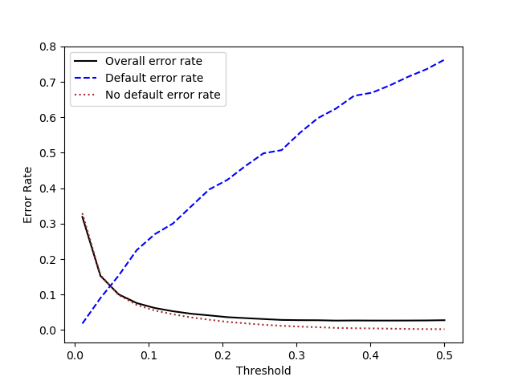

A Python Companion to ISLR
Table of Contents
- 1. Introduction
- 2. Statistical Learning
- 3. Linear Regression
- 4. Classification
- 5. Resampling Methods
- 6. Linear Model Selection and Regularization
1 Introduction
Figure 1 shows graphs of Wage versus three variables.
import matplotlib matplotlib.use('Agg') import matplotlib.pyplot as plt import sys sys.path.append('./code/chap1/') import wagePlot plt.savefig(fname) return fname

Figure 1: Wage data, which contains income survey information for males from the central Atlantic region of the United States. Left: wage as a function of age. On average, wage increases with age until about 60 years of age, at which point it begins to decline. Center: wage as a function of year. There is a slow but steady increase of approximately $10,000 in the average wage between 2003 and 2009. Right: Boxplots displaying wage as a function of education, with 1 indicating the lowest level (no highschool diploma) and 5 the highest level (an advanced graduate degree). On average, wage increases with the level of education.
Figure 2 shows boxplots of previous days' percentage changes in S&P
500 grouped according to today's change Up or Down.
import matplotlib matplotlib.use('Agg') import matplotlib.pyplot as plt import sys sys.path.append('./code/chap1/') import SmarketPlot plt.savefig(fname) return fname

Figure 2: Left: Boxplots of the previous day's percentage change in the S&P 500 index for the days for which the market increased or decreased, obtained from the Smarket data. Center and Right: Same as left panel, but the percentage changes for two and three days previous are shown.
2 Statistical Learning
2.1 What is Statistical Learning?
Figure 3 shows scatter plots of sales versus TV, radio,
and newspaper advertising. In each panel, the figure also includes an OLS
regression line.
import matplotlib matplotlib.use('Agg') import matplotlib.pyplot as plt import sys sys.path.append('./code/chap2/') import salesPlot plt.savefig(fname) return fname

Figure 3: The Advertising data set. The plot displays sales, in thousands of units, as a function of TV, radio, and newspaper budgets, in thousands of dollars, for 200 different markets. In each plot we show the simple least squares fit of sales to that variable. In other words, each red line represents a simple model that can be used to predict sales using TV, radio, and newspaper, respectively.
Figure 4 is a plot of Income versus Years of Education from the
Income data set. In the left panel, the ``true'' function (given by blue line)
is actually my guess.
import matplotlib matplotlib.use('Agg') import sys import matplotlib.pyplot as plt sys.path.append('./code/chap2/') import incomeEdPlot plt.savefig(fname) return fname

Figure 4: The Income data set. Left: The red dots are the observed values of income (in tens of thousands of dollars) and years of education for 30 individuals. Right: The blue curve represents the true underlying relationship between income and years of education, which is generally unknown (but is known in this case because the data are simulated). The vertical lines represent the error associated with each observation. Note that some of the errors are positive (when an observation lies above the blue curve) and some are negative (when an observation lies below the curve). Overall, these errors have approximately mean zero.
Figure 5 is a plot of Income versus Years of Education and
Seniority from the Income data set. Since the book does not provide the
true values of Income, ``true'' values shown in the plot are actually third
order polynomial fit.
import matplotlib matplotlib.use('Agg') import sys import matplotlib.pyplot as plt sys.path.append('./code/chap2') import incEdSen3d my_formula = 'Income ~ Education + I(Education**2) + I(Education**3) + Seniority + I(Seniority**2) + I(Seniority**3)' incEdSen3d.plotIncomeEdSeniority(my_formula) plt.savefig(fname) return fname

Figure 5: The plot displays income as a function of years of education and seniority in the Income data set. The blue surface represents the true underlying relationship between income and years of education and seniority, which is known since the data are simulated. The red dots indicate the observed values of these quantities for 30 individuals.
Figure 6 shows an example of the parametric approach applied to
the Income data from previous figure.
import matplotlib matplotlib.use('Agg') import sys import matplotlib.pyplot as plt sys.path.append('./code/chap2') import incomeEdSeniority2_4 plt.savefig(fname) return fname

Figure 6: A linear model fit by least squares to the Income data from figure 5. The observations are shown in red, and the blue plane indicates the least squares fit to the data.
Figure 7 provides an illustration of the trade-off between flexibility and interpretability for some of the methods covered in this book.
import matplotlib matplotlib.use('Agg') import sys import matplotlib.pyplot as plt sys.path.append('./code/chap2/') import interpretVsFlexibility plt.savefig(fname) return(fname)

Figure 7: A representation of the tradeoff between flexibility and interpretability, using different statistical learning methods. In general, as the flexibility of a method increases, its interpretability decreases.
Figure 8 provides a simple illustration of the clustering problem.
import matplotlib matplotlib.use('Agg') import sys import matplotlib.pyplot as plt sys.path.append('./code/chap2/') import clusteringPlot plt.savefig(fname) return fname

Figure 8: A clustering data set involving three groups. Each group is shown using a different colored symbol. Left: The three groups are well-separated. In this setting, a clustering approach should successfully identify the three groups. Right: There is some overlap among the groups. Now the clustering taks is more challenging.
2.2 Assessing Model Accuracy
Figure 9 illustrates the tradeoff between training MSE and test
MSE. We select a ``true function'' whose shape is similar to that shown in the
book. In the left panel, the orange, blue, and green curves illustrate three possible estimates
for \(f\) given by the black curve. The orange line is the linear regression
fit, which is relatively inflexible. The blue and green curves were produced
using smoothing splines from UnivariateSpline function in scipy package.
We obtain different levels of flexibility by varying the parameter s, which
affects the number of knots.
For the right panel, we have chosen polynomial fits. The degree of polynomial
represents the level of flexibility. This is because the function
UnivariateSpline does not more than five degrees of freedom.
When we repeat the simulations for figure 9, we see considerable variation in the right panel MSE plots. But the overall conclusion remains the same.
import matplotlib import numpy as np matplotlib.use('Agg') import sys import matplotlib.pyplot as plt sys.path.append('./code/chap2/') import biasVarTradeoff # This function shape is similar to book figure 2.9 left panel def myFunc(x): return 6.0 + 2 * np.sin((x - 40.0) / 20.0) biasVarTradeoff.mseVsFlexibility(myFunc) plt.savefig(fname) return fname
Figure 9: Left: Data simulated from \(f\), shown in black. Three estimates of \(f\) are shown: the linear regression line (orange curve), and two smoothing spline fits (blue and green curves). Right: Training MSE (grey curve), test MSE (red curve), and minimum possible test MSE over all methods (dashed grey line).
Figure 10 provides another example in which the true \(f\) is approximately linear.
import matplotlib matplotlib.use('Agg') import numpy as np import matplotlib.pyplot as plt import sys sys.path.append('./code/chap2/') import biasVarTradeoff # This function has shape similar to book figure 2.10 def myFunc(x): return 2 + 0.05 * x + 0.0005 * (x ** 2) biasVarTradeoff.mseVsFlexibility(myFunc) plt.savefig(fname) return fname

Figure 10: Details are as in figure 9 using a different true \(f\) that is much closer to linear. In this setting, linear regression provides a very good fit to the data.
Figure 11 displays an example in which \(f\) is highly non-linear. The training and test MSE curves still exhibit the same general patterns.
import matplotlib matplotlib.use('Agg') import matplotlib.pyplot as plt import numpy as np import sys sys.path.append('./code/chap2/') import biasVarTradeoff # This function has shape similar to book figure 2.11 def myFunc(x): return 0.012 * ((x - 35) ** 2) - 0.00025 * ((x - 35) ** 3) biasVarTradeoff.mseVsFlexibility(myFunc) plt.savefig(fname) return fname

Figure 11: Details are as in figure 9, using a different \(f\) that is far from linear. In this setting, linear regression provides a very poor fit to the data.
Figure 12 displays the relationship between bias, variance, and test MSE. This relationship is referred to as bias-variance trade-off. When simulations are repeated, we see considerable variation in different graphs, especially for MSE lines. But overall shape remains the same.
import matplotlib matplotlib.use('Agg') import matplotlib.pyplot as plt import numpy as np import sys sys.path.append('./code/chap2') import biasVarError # Use same functions which were used to generate figures 2.9, 2.10, and 2.11 def myFunc(x): return 6.0 + 2 * np.sin((x - 40.0) / 20.0) degree, mse, var, bias = biasVarError.mseBiasVar(myFunc) fig = plt.figure() ax1 = fig.add_subplot(131) ax1.plot(degree, mse, color='brown', alpha=0.7) ax1.plot(degree, bias, color='blue', linestyle='-.') ax1.plot(degree, var, color='orange', linestyle='--', alpha=0.9) ax1.set_ylim(0, min(5, max(mse))) ax1.axhline(y=1, color='grey', linestyle='--') min_mse_ind = mse.index(min(mse)) ax1.axvline(x=degree[min_mse_ind], color='grey', linestyle=':') ax1.set_xlabel('Flexibility') def myFunc(x): return 2 + 0.05 * x + 0.0005 * (x ** 2) degree, mse, var, bias = biasVarError.mseBiasVar(myFunc) ax2 = fig.add_subplot(132) ax2.plot(degree, mse, color='brown', alpha=0.7) ax2.plot(degree, bias, color='blue', linestyle='-.') ax2.plot(degree, var, color='orange', linestyle='--', alpha=0.9) ax2.set_ylim(0, min(5, max(mse))) ax2.axhline(y=1, color='grey', linestyle='--') min_mse_ind = mse.index(min(mse)) ax2.axvline(x=degree[min_mse_ind], color='grey', linestyle=':') ax2.set_xlabel('Flexibility') def myFunc(x): return 0.012 * ((x - 35) ** 2) - 0.00025 * ((x - 35) ** 3) degree, mse, var, bias = biasVarError.mseBiasVar(myFunc) ax3 = fig.add_subplot(133) ax3.plot(degree, mse, color='brown', alpha=0.7, label='MSE') ax3.plot(degree, bias, color='blue', linestyle='-.', label=r'$Bias^2$') ax3.plot(degree, var, color='orange', linestyle='--', label='Var', alpha=0.9) ax3.set_ylim(0, min(50, max(mse))) ax3.axhline(y=1, color='grey', linestyle='--') min_mse_ind = mse.index(min(mse)) ax3.axvline(x=degree[min_mse_ind], color='grey', linestyle=':') ax3.set_xlabel('Flexibility') ax3.legend() fig.tight_layout() plt.savefig(fname) return fname

Figure 12: Squared bias (blue curve), variance (orange curve), \(Var(\epsilon)\) (dashed line), and test MSE (red curve) for the three data sets in figures 9 - 11. The vertical dotted line indicates the flexibility level corresponding to the smallest test MSE.
Figure 13 provides an example using a simulated data set in two-dimensional space consisting of predictors \(X_1\) and \(X_2\).
import matplotlib matplotlib.use('Agg') import matplotlib.pyplot as plt import sys sys.path.append('./code/chap2/') import knnBoundry fig = plt.figure() ax = fig.add_subplot(111) knnBoundry.plotClassify() fig.tight_layout() plt.savefig(fname) return fname

Figure 13: A simulated data set consisting of 200 observations in two groups, indicated in blue and orange. The dashed line represents the Bayes decision boundary. The orange background grid indicates the region in which a test observation will be assigned to the orange class, and blue background grid indicates the region in which a test observation will be assigned to the blue class.
Figure 14 displays the KNN decision boundary, using \(K=10\), when applied to the simulated data set from figure 13. Even though the true distribution is not known by the KNN classifier, the KNN decision making boundary is very close to that of the Bayes classifier.
import matplotlib matplotlib.use('Agg') import matplotlib.pyplot as plt import sys sys.path.append('./code/chap2/') import knnBoundry fig = plt.figure() ax = fig.add_subplot(111) knnBoundry.plotClassify(KNN=True, region='KNN', plot_title=True) fig.tight_layout() plt.savefig(fname) return fname

Figure 14: The firm line indicates the KNN decision boundary on the data from figure 13, using \(K = 10\). The Bayes decision boundary is shown as a dashed line. The KNN and Bayes decision boundaries are very similar.
import matplotlib matplotlib.use('Agg') import matplotlib.pyplot as plt import sys sys.path.append('./code/chap2/') import knnBoundry fig = plt.figure() ax1 = fig.add_subplot(121) knnBoundry.plotClassify(KNN=True, region='KNN', k_neighbors=1, plot_title=True) ax2 = fig.add_subplot(122) knnBoundry.plotClassify(KNN=True, region='KNN', k_neighbors=100, plot_title=True) fig.tight_layout() plt.savefig(fname) return fname

Figure 15: A comparison of the KNN decision boundaries (solid curves) obtained using \(K=1\) and \(K=100\) on the data from figure 13. With \(K=1\), the decision boundary is overly flexible, while with \(K=100\) it is not sufficiently flexible. The Bayes decision boundary is shown as dashed line.
In figure 16 we have plotted the KNN test and training errors as a function of \(\frac{1}{K}\). As \(\frac{1}{K}\) increases, the method becomes more flexible. As in the regression setting, the training error rate consistently declines as the flexibility increases. However, the test error exhibits the characteristic U-shape, declining at first (with a minimum at approximately \(K=10\)) before increasing again when the method becomes excessively flexible and overfits.
import matplotlib matplotlib.use('Agg') import matplotlib.pyplot as plt import sys import numpy as np sys.path.append('./code/chap2/') import knnBoundry fig = plt.figure() ax = fig.add_subplot(111) knnBoundry.plotErrorRate() fig.tight_layout() plt.savefig(fname) return fname

Figure 16: The KNN training error rate (blue, 200 observations) and test error rate (orange, 5,000 observations) on the data from figure 13 as the level of flexibility (assessed using \(\frac{1}{K}\)) increases, or equivalently as the number of neighbors \(K\) decreases. The black dashed line indicates the Bayes error rate.
2.3 Lab: Introduction to Python
2.3.1 Basic Commands
In Python a list can be created by enclosing comma-separated elements by
square brackets. Length of a list can be obtained using len function.
x = [1, 3, 2, 5] print(len(x)) y = 3 z = 5 print(y + z)
4 8
To create an array of numbers, use array function in numpy library. numpy
functions can be used to perform element-wise operations on arrays.
import numpy as np x = np.array([[1, 2], [3, 4]]) y = np.array([6, 7, 8, 9]).reshape((2, 2)) print(x) print(y) print(x ** 2) print(np.sqrt(y))
[[1 2] [3 4]] [[6 7] [8 9]] [[ 1 4] [ 9 16]] [[2.44948974 2.64575131] [2.82842712 3. ]]
numpy.random has a number of functions to generate random variables that
follow a given distribution. Here we create two correlated sets of numbers, x
and y, and use numpy.corrcoef to calculate correlation between them.
import numpy as np np.random.seed(911) x = np.random.normal(size=50) y = x + np.random.normal(loc=50, scale=0.1, size=50) print(np.corrcoef(x, y)) print(np.corrcoef(x, y)[0, 1]) print(np.mean(x)) print(np.var(y)) print(np.std(y) ** 2)
[[1. 0.99374931] [0.99374931 1. ]] 0.9937493134584551 -0.020219724397254404 0.9330621750073689 0.9330621750073688
2.3.2 Graphics
matplotlib library has a number of functions to plot data in Python. It is
possible to view graphs on screen or save them in file for inclusion in a
document.
import numpy as np import matplotlib # only if we need to save figure in file matplotlib.use('Agg') # only to save figure in file import matplotlib.pyplot as plt x = np.random.normal(size=100) y = np.random.normal(size=100) plt.plot(x, y) plt.xlabel('This is x-axis') plt.ylabel('This is y-axis') plt.title('Plot of X vs Y') plt.savefig('xyPlot.png') # only to save figure in a file
numpy function linspace can be used to create a sequence between a start and
an end of a given length.
import numpy as np import matplotlib.pyplot as plt x = np.linspace(-np.pi, np.pi, num=50) y = x xx, yy = np.meshgrid(x, y) zz = np.cos(yy) / (1 + xx ** 2) plt.contour(xx, yy, zz) fig, ax = plt.subplots() zza = (zz - zz.T) / 2.0 CS = ax.contour(xx, yy, zza) ax.clabel(CS, inline=1)
2.3.3 Indexing Data
To access elements of an array, specify indexes inside square brackets. It is
possible to access multiple rows and columns. shape method gives number of
rows followed by number of columns.
import numpy as np A = np.array(np.arange(1, 17)) A = A.reshape(4, 4, order='F') # column first, Fortran style print(A) print(A[1, 2]) print(A[(0,2),:][:,(1,3)]) print(A[range(0,3),:][:,range(1,4)]) print(A[range(0, 2), :]) print(A[:, range(0, 2)]) print(A[0,:]) print(A.shape)
[[ 1 5 9 13] [ 2 6 10 14] [ 3 7 11 15] [ 4 8 12 16]] 10 [ 5 15] [ 5 10 15] [[ 1 5 9 13] [ 2 6 10 14]] [[1 5] [2 6] [3 7] [4 8]] (4, 4)
2.3.4 Loading Data
pandas library provides read_csv function to read files with data in
rectangular shape.
import pandas as pd Auto = pd.read_csv('data/Auto.csv') print(Auto.head()) print(Auto.shape) print(Auto.columns)
mpg cylinders displacement ... year origin name
0 18.0 8 307.0 ... 70 1 chevrolet chevelle malibu
1 15.0 8 350.0 ... 70 1 buick skylark 320
2 18.0 8 318.0 ... 70 1 plymouth satellite
3 16.0 8 304.0 ... 70 1 amc rebel sst
4 17.0 8 302.0 ... 70 1 ford torino
[5 rows x 9 columns]
(397, 9)
Index(['mpg', 'cylinders', 'displacement', 'horsepower', 'weight',
'acceleration', 'year', 'origin', 'name'],
dtype='object')
To load data from an R library, use get_rdataset function from
statsmodels. This function seems to work only if the computer is connected to
the internet.
from statsmodels import datasets carseats = datasets.get_rdataset('Carseats', package='ISLR').data print(carseats.shape) print(carseats.columns)
(400, 11)
Index(['Sales', 'CompPrice', 'Income', 'Advertising', 'Population', 'Price',
'ShelveLoc', 'Age', 'Education', 'Urban', 'US'],
dtype='object')
2.3.5 Additional Graphical and Numerical Summaries
plot method can be directly applied to a pandas dataframe.
import pandas as pd Auto = pd.read_csv('data/Auto.csv') Auto.boxplot(column='mpg', by='cylinders', grid=False)
hist method can be applied to plot a histogram.
import pandas as pd Auto = pd.read_csv('data/Auto.csv') Auto.hist(column='mpg') Auto.hist(column='mpg', color='red') Auto.hist(column='mpg', color='red', bins=15)
For pairs plot, use scatter_matrix method in pandas.plotting.
import pandas as pd from pandas import plotting Auto = pd.read_csv('data/Auto.csv') plotting.scatter_matrix(Auto[['mpg', 'displacement', 'horsepower', 'weight', 'acceleration']])
On pandas dataframes, describe method produces a summary of each variable.
import pandas as pd Auto = pd.read_csv('data/Auto.csv') print(Auto.describe())
mpg cylinders ... year origin
count 397.000000 397.000000 ... 397.000000 397.000000
mean 23.515869 5.458438 ... 75.994962 1.574307
std 7.825804 1.701577 ... 3.690005 0.802549
min 9.000000 3.000000 ... 70.000000 1.000000
25% 17.500000 4.000000 ... 73.000000 1.000000
50% 23.000000 4.000000 ... 76.000000 1.000000
75% 29.000000 8.000000 ... 79.000000 2.000000
max 46.600000 8.000000 ... 82.000000 3.000000
[8 rows x 7 columns]
3 Linear Regression
3.1 Simple Linear Regression
Figure 17 displays the simple linear regression fit to the
Advertising data, where \(\hat{\beta_0} =\) 0.0475
and \(\hat{\beta_1} =\) 7.0326.
import matplotlib matplotlib.use('Agg') import matplotlib.pyplot as plt import sys sys.path.append('./code/chap3/') import adverTVplot plt.savefig(fname) return fname
Figure 17: For the Advertising data, the least squares fit for the regression of sales onto TV is shown. The fit is found by minimizing the sum of squared errors. Each grey line represents an error, and the fit makes a compromise by averaging their squares. In this case a linear fit captures the essence of the relationship, although it is somewhat deficient in the left of the plot.
import pandas as pd import statsmodels.formula.api as smf advertising = pd.read_csv('data/Advertising.csv', index_col=0) advert_model = smf.ols(formula='sales ~ TV', data=advertising) advert_fit = advert_model.fit() beta0_est = '#+MACRO: beta1_est ' + str(round(advert_fit.params['Intercept'], 4)) beta1_est = '#+MACRO: beta0_est ' + str(round(advert_fit.params['TV'], 4)) return beta0_est + '\n' + beta1_est
In figure 18, we have computed RSS for a number of values of
\(\beta_0\) and \(\beta_1\), using the advertising data with sales as the response
and TV as the predictor.
import matplotlib matplotlib.use('Agg') import matplotlib.pyplot as plt import sys sys.path.append('./code/chap3/') import rssPlot plt.savefig(fname) return fname

Figure 18: Contour and three-dimensional plots of the RSS on the Advertising data, using sales as the response and TV as the predictor. The red dots correspond to the least squares estimates \(\hat{\beta_0}\) and \(\hat{\beta_1}\).
The left-hand panel of figure 19 displays population regression line and least squares line for a simple simulated example. The red line in the left-hand panel displays the true relationship, \(f(X) = 2 + 3X\), while the blue line is the least squares estimate based on observed data. In the right-hand panel of figure 19 we have generated five different data sets from the model \(Y = 2 + 3X + \epsilon\) and plotted the corresponding five least squares lines.
import matplotlib matplotlib.use('Agg') import matplotlib.pyplot as plt import sys sys.path.append('code/chap3/') import plotRegLines plt.savefig(fname) return fname

Figure 19: A simulated data set. Left: The red line represents the true relationship, \(f(X) = 2 + 3X\), which is known as the population regression line. The blue line is the least squares line; it is the least squares estimate for \(f(X)\) based on the observed data, shown in grey circles. Right: The population regression line is again shown in red, and the least squares line in blue. In cyan, five least squares lines are shown, each computed on the basis of a separate random set of observations. Each least squares line is different, but on average, the least squares lines are quite close to the population regression line.
For Advertising data, table 1 provides details of the least squares model for the
regression of number of units sold on TV advertising budget.
import pandas as pd import statsmodels.formula.api as smf import sys sys.path.append('code/general/') import myFuncs advertising = pd.read_csv('data/Advertising.csv', index_col=0) reg_model = smf.ols(formula='sales ~ TV', data=advertising) reg_fit = reg_model.fit() res_table = reg_fit.summary2().tables[1].copy() res_table = res_table[res_table.columns[:4]] res_table.rename(index=str, columns={'t': '$t$', 'P>|t|': '$P > \mid t \mid$'}, inplace=True) for column in res_table.columns: res_table[column] = res_table[column].apply(lambda x: round(x, 4)) return myFuncs.dfToList(res_table)
| Coef. | Std.Err. | \(t\) | \(P > \mid t \mid\) | |
|---|---|---|---|---|
| Intercept | 7.0326 | 0.4578 | 15.3603 | 0.0 |
| TV | 0.0475 | 0.0027 | 17.6676 | 0.0 |
Next, in table 2, we report more information about the least squares model.
import pandas as pd import statsmodels.formula.api as smf import numpy as np advertising = pd.read_csv('data/Advertising.csv', index_col=0) reg_model = smf.ols(formula='sales ~ TV', data=advertising) reg_fit = reg_model.fit() res_std_err = round(np.sqrt(reg_fit.mse_resid), 3) r_sq = round(reg_fit.rsquared, 3) f_stat = round(reg_fit.fvalue, 3) rse = ['Residual standard error', res_std_err] rsq= ['$R^2$', r_sq] fst = ['F-statistic', f_stat] tbl_headers = ['Quantity', 'Value'] return [tbl_headers, None, rse, rsq, fst]
| Quantity | Value |
|---|---|
| Residual standard error | 3.259 |
| \(R^2\) | 0.612 |
| F-statistic | 312.145 |
3.2 Multiple Linear Regression
Table 3 shows results of two simple linear regressions, each of which uses a different advertising medium as a predictor. We find that a $1,000 increase in spending on radio advertising is associated with an increase in sales by around 202 units. A $1,000 increase in advertising spending on on newspapers increases sales by approximately 55 units.
| Coef. | Std.Err. | \(t\) | \(P > \mid t \mid\) | |
|---|---|---|---|---|
| Intercept | 9.312 | 0.563 | 16.542 | 0.0 |
| radio | 0.202 | 0.02 | 9.921 | 0.0 |
| Intercept | 12.351 | 0.621 | 19.876 | 0.0 |
| newspaper | 0.055 | 0.017 | 3.3 | 0.001 |
import pandas as pd import statsmodels.formula.api as smf import sys sys.path.append('code/general/') import myFuncs advertising = pd.read_csv('data/Advertising.csv', index_col=0) reg_model = smf.ols(formula='sales ~ radio', data=advertising) reg_fit = reg_model.fit() res_table = reg_fit.summary2().tables[1].copy() res_table = res_table[res_table.columns[:4]] reg_model2 = smf.ols(formula='sales ~ newspaper', data=advertising) reg_fit2 = reg_model2.fit() res_table2 = reg_fit2.summary2().tables[1].copy() res_table2 = res_table2[res_table2.columns[:4]] res_all = pd.concat((res_table, res_table2)) res_all.rename(index=str, columns={'t': '$t$', 'P>|t|': '$P > \mid t \mid$'}, inplace=True) return myFuncs.dfToList(round(res_all, 3), [0, 2])
import pandas as pd import statsmodels.formula.api as smf advertising = pd.read_csv('data/Advertising.csv', index_col=0) reg_radio_model = smf.ols(formula='sales ~ radio', data=advertising) radio_model_fit = reg_radio_model.fit() radio_beta = '#+MACRO: radio_beta_est ' + \ str(round(radio_model_fit.params['radio'] * 1000, 0))[:-2] reg_newsp_model = smf.ols(formula='sales ~ newspaper', data=advertising) newsp_model_fit = reg_newsp_model.fit() newsp_beta = '#+MACRO: newsp_beta_est ' + \ str(round(newsp_model_fit.params['newspaper'] * 1000, 0))[:-2] return radio_beta + '\n' + newsp_beta
Figure 20 illustrates an example of the least squares fit to a toy data set with \(p = 2\) predictors.
import matplotlib matplotlib.use('Agg') import matplotlib.pyplot as plt import sys sys.path.append('code/chap3/') import regTwoVarPlot plt.savefig(fname) return fname

Figure 20: In a three-dimensional setting, with two predictors and one response, the least squares regression line becomes a plane. The plane is chosen to minimize the sum of the squared vertical distances between each observation (shown in red) and the plane.
Table 4 displays multiple regression coefficient estimates when
TV, radio, and newspaper advertising budgets are used to predict product sales
using Advertising data.
import pandas as pd import statsmodels.formula.api as smf import sys sys.path.append('code/general/') import myFuncs advertising = pd.read_csv('data/Advertising.csv', index_col=0) reg_model = smf.ols(formula='sales ~ TV + radio + newspaper', data=advertising) reg_fit = reg_model.fit() reg_res = reg_fit.summary2().tables[1].copy() reg_res = reg_res[reg_res.columns[:4]] for col_name in reg_res.columns: reg_res[col_name] = reg_res[col_name].apply(lambda x: round(x, 3)) reg_res.rename(index=str, columns={'t': '$t$', 'P>|t|': '$P > \mid t \mid$'}, inplace=True) return myFuncs.dfToList(reg_res)
| Coef. | Std.Err. | \(t\) | \(P > \mid t \mid\) | |
|---|---|---|---|---|
| Intercept | 2.939 | 0.312 | 9.422 | 0.0 |
| TV | 0.046 | 0.001 | 32.809 | 0.0 |
| radio | 0.189 | 0.009 | 21.893 | 0.0 |
| newspaper | -0.001 | 0.006 | -0.177 | 0.86 |
Table 5 shows the correlation matrix for the three predictor variables and response variable in table 4.
import pandas as pd import sys sys.path.append('code/general/') import myFuncs advertising = pd.read_csv('data/Advertising.csv', index_col=0) my_cor = advertising.corr() for col_name in my_cor.columns: my_cor[col_name] = my_cor[col_name].apply(lambda x: round(x, 4)) return myFuncs.dfToList(my_cor)
| TV | radio | newspaper | sales | |
|---|---|---|---|---|
| TV | 1.0 | 0.0548 | 0.0566 | 0.7822 |
| radio | 0.0548 | 1.0 | 0.3541 | 0.5762 |
| newspaper | 0.0566 | 0.3541 | 1.0 | 0.2283 |
| sales | 0.7822 | 0.5762 | 0.2283 | 1.0 |
import pandas as pd import statsmodels.formula.api as smf import numpy as np advertising = pd.read_csv('data/Advertising.csv', index_col=0) reg_model = smf.ols(formula='sales ~ TV + radio + newspaper', data=advertising) reg_fit = reg_model.fit() rss = round(np.sqrt(reg_fit.mse_resid), 2) rsq = round(reg_fit.rsquared, 3) fstat = round(reg_fit.fvalue) rss_tup = ('Residual standard error', rss) rsq_tup = ('$R^2$', rsq) fstat_tup = ('F-statistic', fstat) header = ('Quantity', 'Value') return (header, None, rss_tup, rsq_tup, fstat_tup)
| Quantity | Value |
|---|---|
| Residual standard error | 1.69 |
| \(R^2\) | 0.897 |
| F-statistic | 570.0 |
Figure 21 displays a three-dimensional plot of TV and radio
versus sales.
import matplotlib matplotlib.use('Agg') import matplotlib.pyplot as plt import sys sys.path.append('code/chap3/') import tvRadioSalesPlot plt.savefig(fname) return fname

Figure 21: For the Advertising data, a linear regression fit to sales using TV and radio as predictors. From the pattern of the residuals, we can see that there is a pronounced non-linear relationship in the data. The positive residuals tend to lie along the 45-degree line, where TV and Radio budgets are split evenly. The negative residuals tend to lie away from this line, where budgets are more lopsided.
3.3 Other Considerations in the Regression Model
Credit data set displayed in figure 22 records balance
(average credit card debt for a number of individuals) as well as several
quantitative predictors: age, cards (number of credit cards), education
and rating (credit rating).
import matplotlib matplotlib.use('Agg') import matplotlib.pyplot as plt import sys sys.path.append('code/chap3/') import creditPairsPlot plt.savefig(fname) return fname

Figure 22: The Credit dataset contains information about balance, age, cards, education, income, limit, and rating for a number of potential customers.
Table 7 displays the coefficient estimates and other information
associated with the model where gender is the only explanatory variable.
import pandas as pd import statsmodels.formula.api as smf import statsmodels.datasets as datasets import sys sys.path.append('code/general/') import myFuncs credit = datasets.get_rdataset('Credit', 'ISLR').data gender_reg_model = smf.ols(formula='Balance ~ Gender', data=credit) gender_reg_fit = gender_reg_model.fit() gender_reg_res = gender_reg_fit.summary2().tables[1].copy() gender_reg_res = gender_reg_res[gender_reg_res.columns[:4]] for col_name in gender_reg_res.columns: gender_reg_res.loc[:, col_name] = round(gender_reg_res[col_name], 3) gender_reg_res.rename(index=str, columns={'t': '$t$', 'P>|t|': '$P > \mid t \mid$'}, inplace=True) return myFuncs.dfToList(gender_reg_res)
| Coef. | Std.Err. | \(t\) | \(P > \mid t \mid\) | |
|---|---|---|---|---|
| Intercept | 509.803 | 33.128 | 15.389 | 0.0 |
| Gender[T.Female] | 19.733 | 46.051 | 0.429 | 0.669 |
From table 8 we see that the estimated balance for the
baseline, African American, is $531.0. It is estimated that the
Asian category will have an additional $-18.7 debt, and that the
Caucasian category will have an additional $-12.5 debt compared to
African American category.
import pandas as pd import statsmodels.formula.api as smf import statsmodels.datasets as datasets credit = datasets.get_rdataset('Credit', 'ISLR').data eth_model = smf.ols(formula='Balance ~ Ethnicity', data=credit) eth_fit = eth_model.fit()
<<balance_eth_reg>> import sys sys.path.append('code/general/') import myFuncs eth_res = eth_fit.summary2().tables[1].copy() eth_res = eth_res[eth_res.columns[:4]] for col_name in eth_res.columns: eth_res.loc[:, col_name] = round(eth_res[col_name], 3) eth_res.rename(index=str, columns={'t': '$t$', 'P>|t|': '$P > \mid t \mid$'}, inplace=True) return myFuncs.dfToList(eth_res)
| Coef. | Std.Err. | \(t\) | \(P > \mid t \mid\) | |
|---|---|---|---|---|
| Intercept | 531.0 | 46.319 | 11.464 | 0.0 |
| Ethnicity[T.Asian] | -18.686 | 65.021 | -0.287 | 0.774 |
| Ethnicity[T.Caucasian] | -12.503 | 56.681 | -0.221 | 0.826 |
<<balance_eth_reg>> afr_amer = '#+MACRO: afr_amr_est ' + \ str(round(eth_fit.params['Intercept'], 1)) asian = '#+MACRO: asian_incr ' + \ str(round(eth_fit.params['Ethnicity[T.Asian]'], 1)) caucasian = '#+MACRO: cauc_incr ' + \ str(round(eth_fit.params['Ethnicity[T.Caucasian]'], 1)) return afr_amer + '\n' + asian + '\n' + caucasian
Table 9 shows results of regressing sales and TV and radio
when an interaction term is included. Coefficient of interaction term
TV:radio is highly significant.
import pandas as pd import statsmodels.formula.api as smf import sys sys.path.append('code/general/') import myFuncs advertising = pd.read_csv('data/Advertising.csv', index_col=0) reg_model = smf.ols(formula='sales ~ TV + radio + TV * radio', data=advertising) reg_fit = reg_model.fit() reg_res = reg_fit.summary2().tables[1].copy() reg_res = reg_res[reg_res.columns[:4]] for col_name in reg_res.columns: reg_res.loc[:, col_name] = round(reg_res[col_name], 3) reg_res.rename(index=str, columns={'t': '$t$', 'P>|t|': '$P > \mid t \mid$'}, inplace=True) return myFuncs.dfToList(reg_res)
In figure 23, the left panel shows least squares lines when
we predict balance using income (quantitative) and student (qualitative
variables). There is no interaction term between income and student. The
right panel shows least squares lines when an interaction term is included.
| Coef. | Std.Err. | \(t\) | \(P > \mid t \mid\) | |
|---|---|---|---|---|
| Intercept | 6.75 | 0.248 | 27.233 | 0.0 |
| TV | 0.019 | 0.002 | 12.699 | 0.0 |
| radio | 0.029 | 0.009 | 3.241 | 0.001 |
| TV:radio | 0.001 | 0.0 | 20.727 | 0.0 |
import matplotlib matplotlib.use('Agg') import matplotlib.pyplot as plt import sys sys.path.append('code/chap3/') import creditIncomeStudent plt.savefig(fname) return fname

Figure 23: For the Credit data, the least squares lines are shown for prediction of balance from income for students and non-students. Left: There is no interaction between income and student. Right: There is an interaction term between income and students.
Figure 24 shows a scatter plot of mpg (gas mileage in miles per
gallon) versus horsepower in the Auto data set. The figure also includes
least squares fit line for linear, second degree, and fifth degree polynomials
in horsepower.
import matplotlib matplotlib.use('Agg') import matplotlib.pyplot as plt import sys sys.path.append('code/chap3') import autoMgpHp plt.savefig(fname) return fname

Figure 24: The Auto data set. For a number of cars, mpg and horsepower are shown. The linear regression fit is shown in orange. The linear regression fit for a model that includes first- and second-order terms of horsepower is shown as blue curve. The linear regression fit for a model that includes all polynomials of horsepower up to fifth-degree is shown in green.
Table 10 shows regression results of a quadratic fit to explain
mpg as a function of horsepower and \(\mathttt{horsepower^2}\).
import pandas as pd import statsmodels.formula.api as smf import sys sys.path.append('code/general/') import myFuncs auto_full = pd.read_csv('data/Auto.csv', na_values='?') auto = auto_full.dropna() reg_model = smf.ols(formula='mpg ~ horsepower + I(horsepower ** 2)', data=auto) reg_fit = reg_model.fit() reg_res = reg_fit.summary2().tables[1].copy() reg_res = reg_res[reg_res.columns[:4]] for col_name in reg_res.columns: reg_res[col_name] = round(reg_res[col_name], 4) reg_res.rename(index=str, columns={'t': '$t$', 'P>|t|': '$P > \mid t \mid$'}, inplace=True) reg_res.rename(index={'I(horsepower ** 2)': '$horsepower^2$'}, inplace=True) return myFuncs.dfToList(reg_res)
| Coef. | Std.Err. | \(t\) | \(P > \mid t \mid\) | |
|---|---|---|---|---|
| Intercept | 56.9001 | 1.8004 | 31.6037 | 0.0 |
| horsepower | -0.4662 | 0.0311 | -14.9782 | 0.0 |
| \(horsepower^2\) | 0.0012 | 0.0001 | 10.0801 | 0.0 |
The left panel of figure 25 displays a residual plot from the
linear regression of mpg onto horsepower on the Auto data set. The red
line is a smooth fit to the residuals, which is displayed in order to make it
easier to identify any trends. The residuals exhibit a clear U-shape, which
strongly suggests non-linearity in the data. In contrast, the right hand panel
of figure25 displays the residual plot results from the model
which contains a quadratic term in horsepower. Now there is little pattern in
residuals, suggesting that the quadratic term improves the fit to the data.
import matplotlib matplotlib.use('Agg') import matplotlib.pyplot as plt import sys sys.path.append('code/chap3/') import residPlot plt.savefig(fname) return fname
Figure 25: Plots of residuals versus predicted (or fitted) values for the Auto data set. In each plot, the red line is a smooth fit to the residuals, intended to make it easier to identify a trend. Left: A linear regression of mpg on horsepower. A strong pattern in the residuals indicates non-linearity in the data. Right: A linear regression of mpg on horsepower and square of horsepower. Now there is little pattern in the residuals.
Figure 26 provides an illustration of correlations among residuals. In the top panel, we see the residuals from a linear regression fit to data generated with uncorrelated errors. There is no evidence of time-related trend in the residuals. In contrast, the residuals in the bottom panel are from a data set in which adjacent errors had a correlation of 0.9. Now there is a clear pattern in the residuals - adjacent residuals tend to take on similar values. Finally, the center panel illustrates a more moderate case in which the residuals had a correlation of 0.5. There is still evidence of tracking, but the pattern is less pronounced.
import matplotlib matplotlib.use('Agg') import matplotlib.pyplot as plt import sys sys.path.append('code/chap3/') import corResidPlots plt.savefig(fname) return fname
Figure 26: Plots of residuals from simulated time series data sets generated with differeing levels of correlation \(\rho\) between error terms for adjacent time points.
In the left-hand panel of figure 27, the magnitude of the residuals tends to increase with the fitted values. The right hand panel displays residual plot after transforming the response using \(\log(Y)\). The residuals now appear to have constant variance, although there is some evidence of a non-linear relationship in the data.
import matplotlib matplotlib.use('Agg') import matplotlib.pyplot as plt import sys sys.path.append('code/chap3/') import residScale plt.savefig(fname) return fname

Figure 27: Residual plots. The red line, a smooth fit to the residuals, is intended to make it easier to identify a trend. The blue lines track \(5^{th}\) and \(95^{th}\) percentiles of the residuals, and emphasize patterns. Left: The funnel shape indicates heteroscedasticity. Right: the response has been log transformed, and now there is no evidence of heteroscedasticity.
The red point (observation 20) in the left hand panel of figure 28 illustrates a typical outlier. The red solid line is the least squares regression fit, while the blue dashed line is the least squares fit after removal of the outlier. In this case, removal of outlier has little effect on the least squares line. In the center panel of figure 28, the outlier is clearly visible. In practice, to decide if the outlier is sufficiently big to be considered an outlier, we can plot studentized residuals, computed by dividing each residual \(\epsilon_i\) by its estimated standard error. These are shown in the right hand panel.
import matplotlib matplotlib.use('Agg') import matplotlib.pyplot as plt import sys sys.path.append('code/chap3/') import residOutlier plt.savefig(fname) return fname

Figure 28: Left: The least squares regression line is shown in red. The regression line after removing the outlier is is shown in blue. Center: The residual plot clearly identifies the outlier. Right: The outlier has a studentized residual of 6; typically we expect values between -3 and 3.
Observation 41 in the left-hand panel in figure 29 has high leverage, in that the predictor value for this observation is large relative to the other observations. The data displayed in figure 29 are the same as the data displayed in figure 28, except for the addition of a single high leverage observation1. The red solid line is the least squares fit to the data, while the blue dashed line is the fit produced when observation 41 is removed. Comparing the left-hand panels of figures 28 and 29, we observe that removing the high leverage observation has a much more substantial impact on least squares line than removing the outlier. The center panel of figure 29, for a data set with two predictors \(X_1\) and \(X_2\). While most of the observations' predictor values fall within the region of blue dashed lines, the red observation is well outside this range. But neither the value for \(X_1\) nor the value for \(X_2\) is unusual. So if we examine just \(X_1\) or \(X_2\), we will not notice this high leverage point. The right-panel of figure 29 provides a plot of studentized residuals versus \(h_i\) for the data in the left hand panel. Observation 41 stands out as having a very high leverage statistic as well as a high studentized residual.
import matplotlib matplotlib.use('Agg') import matplotlib.pyplot as plt import sys sys.path.append('code/chap3/') import leverageResid plt.savefig(fname) return fname

Figure 29: Left: Observation 41 is a high leverage point, while 20 is not. The red line is the fit to all the data, and the blue line is the fit with observation 41 removed. Center: The red observation is not unusual in terms of its \(X_1\) value or its \(X_2\) value, but still falls outside the bulk of the data, and hence has high leverage. Right: Observation 41 has a high leverage and a high residual.
Figure 30 illustrates the concept of collinearity.
import matplotlib matplotlib.use('Agg') import matplotlib.pyplot as plt import pandas as pd import statsmodels.datasets as datasets credit = datasets.get_rdataset('Credit', 'ISLR').data fig = plt.figure(figsize=(8, 4)) ax1 = fig.add_subplot(121) credit.plot(x='Limit', y='Age', kind='scatter', alpha=0.4, c='r', ax=ax1) ax2 = fig.add_subplot(122) credit.plot(x='Limit', y='Rating', kind='scatter', alpha=0.2, c='r', ax=ax2) fig.tight_layout() plt.savefig(fname) return fname

Figure 30: Scatter plots of the observations from the Credit data set. Left: A plot of age versus limit. These two variables not collinear. Right: A plot of rating versus limit. There is high collinearity.
Figure 31 illustrates some of the difficulties that can result
from collinearity. The left panel is a contour plot of the RSS associated with
different possible coefficient estimates for the regression of balance on
limit and age. Each ellipse represents a set of coefficients that
correspond to the same RSS, with ellipses nearest to the center taking on the
lowest values of RSS. The black dot and the associated dashed lines represent
the coefficient estimates that result in the smallest possible RSS. The axes
for limit and age have been scaled so that the plot includes possible
coefficients that are up to four standard errors on either side of the least
squares estimates. We see that the true limit coefficient is almost certainly
between 0.15 and 0.20.
In contrast, the right hand panel of figure 31 displays contour
plots of the RSS associated with possible coefficient estimates for the
regression of balance onto limit and rating, which we know to be highly
collinear. Now the contours run along a narrow valley; there is a broad range
of values for the coefficient estimates that result in equal values for RSS.
import matplotlib matplotlib.use('Agg') import matplotlib.pyplot as plt import sys sys.path.append('code/chap3/') import ageLimitRating plt.savefig(fname) return fname

Figure 31: Contour plots for the RSS values as a function of the parameters \(\beta\) for various regressions involving the Credit data set. In each plot, the black dots represent the coefficient values corresponding to the minimum RSS. Left: A contour plot of RSS for the regression of balance onto age and limit. The minimum value is well defined. Right: A contour plot of RSS for the regression of balance onto rating and limit. Because of the collinearity, there are many pairs \((\beta_{Limit}, \beta_{Rating})\) with a similar value for RSS.
Table 11 compares the coefficient estimates obtained from two
separate multiple regression models. The first is a regression of balance on
age and limit. The second is a regression of balance on rating and
limit. In the first regression, both age and limit are highly significant
with very small p-values. In the second, the collinearity between limit and
rating has caused the standard error for the limit coefficient to increase
by a factor of 12 and the p-value to increase to 0.701. In other words, the
importance of the limit variable has been masked due to the presence of
collinearity.
import pandas as pd import statsmodels.formula.api as smf import statsmodels.datasets as datasets import sys sys.path.append('code/general/') import myFuncs credit = datasets.get_rdataset('Credit', 'ISLR').data age_limit_reg = smf.ols(formula='Balance ~ Age + Limit', data=credit) age_limit_fit = age_limit_reg.fit() age_limit_res = age_limit_fit.summary2().tables[1] age_limit_res = age_limit_res[age_limit_res.columns[:4]] rating_limit_reg = smf.ols(formula='Balance ~ Rating + Limit', data=credit) rating_limit_fit = rating_limit_reg.fit() rating_limit_res = rating_limit_fit.summary2().tables[1] rating_limit_res = rating_limit_res[rating_limit_res.columns[:4]] both_res = pd.concat((age_limit_res, rating_limit_res)) both_res.rename(index=str, columns={'t': '$t$', 'P>|t|': '$P > \mid t \mid$'}, inplace=True) return myFuncs.dfToList(round(both_res, 3), [0, 3])
| Coef. | Std.Err. | \(t\) | \(P > \mid t \mid\) | |
|---|---|---|---|---|
| Intercept | -173.411 | 43.828 | -3.957 | 0.0 |
| Age | -2.291 | 0.672 | -3.407 | 0.001 |
| Limit | 0.173 | 0.005 | 34.496 | 0.0 |
| Intercept | -377.537 | 45.254 | -8.343 | 0.0 |
| Rating | 2.202 | 0.952 | 2.312 | 0.021 |
| Limit | 0.025 | 0.064 | 0.384 | 0.701 |
3.4 The Marketing Plan
3.5 Comparison of Linear Regression with K-Nearest Neighbors
Figure 32 illustrates two KNN fits on a data set with \(p = 2\) predictors. The fit with \(K = 1\) is shown in the left-hand panel, while the right-hand panel displays the fit with \(K = 9\). When \(K = 1\), the KNN fit perfectly interpolates the training observations, and consequently takes the form of a step function. When \(K = 9\), the KNN fit is still a step function, but averaging over nine observations results in much smaller regions of constant prediction, and consequently a smoother fit.
import matplotlib matplotlib.use('Agg') import matplotlib.pyplot as plt import sys sys.path.append('code/chap3/') import knnRegression plt.savefig(fname) return fname

Figure 32: Plots of \(\hat{f}(X)\) using KNN regression on two-dimensional data set with 64 observations (brown dots). Left: \(K = 1\) results in a rough step function fit. Right: \(K = 9\) produces a much smoother fit.
Figure 33 provides an example of KNN regression with data generated from a one-dimensional regression model. the black dashed lines represent \(f(X)\), while the blue curves correspond to the KNN fits using \(K = 1\) and \(K = 9\). In this case, the \(K = 1\) predictions are far too variable, while the smoother \(K = 9\) fit is much closer to \(f(X)\).
import matplotlib matplotlib.use('Agg') import matplotlib.pyplot as plt import sys sys.path.append('code/chap3/') import knnFits plt.savefig(fname) return fname

Figure 33: Plots of \(\hat{f}(X)\) using KNN regression on a one-dimensional data set with 50 observations. The true relationship is given by the black dashed line. Left: The blue curve corresponds to \(K = 1\) and interpolates (i.e., passes directly through) training data. Right: The blue curve corresponds to \(K = 9\), and represents a smoother fit.
Figure 34 represents the linear regression fit to the same data. It is almost perfect. The right hand panel of figure 34 reveals that linear regression outperforms KNN for this data. The green line, plotted as a function of \(\frac{1}{K}\), represents the test set mean squared error (MSE) for KNN. The KNN errors are well above the horizontal dashed line, which is the test MSE for linear regression.
import matplotlib matplotlib.use('Agg') import matplotlib.pyplot as plt import sys sys.path.append('code/chap3/') import knnMSE plt.savefig(fname) return fname
Figure 34: The same data set shown in figure 33 is investigated further. Left: The blue dashed line is the least squares fit to the data. Since \(f(X)\) is in fact linear (displayed in black line), the least squares regression line provides a very good estimate of \(f(X)\). Right: The dashed horizontal line represents the least squares test set MSE, while the green line corresponds to the MSE for KNN as a function of \(\frac{1}{K}\). Linear regression achieves a lower test MSE than does KNN regression, since \(f(X)\) is in fact linear.
Figure 35 examines the relative performances of least squares regression and KNN under increasing levels of non-linearity in the relationship between \(X\) and \(Y\). In the top row, the true relationship is nearly linear. In this case, we see that the test MSE for linear regression is still superior to that of KNN for low values of \(K\) (far right). However, as \(K\) increases, KNN outperforms linear regression. The second row illustrates a more substantial deviation from linearity. In this situation, KNN substantially outperforms linear regression for all values of \(K\).
import matplotlib matplotlib.use('Agg') import matplotlib.pyplot as plt import sys sys.path.append('code/chap3/') import knnVarious plt.savefig(fname) return fname

Figure 35: Top Left: In a setting with a slightly non-linear relationship between \(X\) and \(Y\) (solid black line), the KNN fits with \(K = 1\) (blue) and \(K = 9\) (red) are displayed. Top Right: For the slightly non-linear data,the test set MSE for least squares regression (horizontal) and KNN with various values of \(\frac{1}{K}\) (green) are displayed. Bottom Left and Bottom Right: As in the top panel, but with a strongly non-linear relationship between \(X\) and \(Y\).
Figure 36 considers the same strongly non-linear situation as in the lower panel of figure 35, except that we have added additional noise predictors that are not associated with the response. When \(p = 1\) or \(p = 2\), KNN outperforms linear regression. But as we increase \(p\), linear regression becomes superior to KNN. In fact, increase in dimensionality has only caused a small increase in linear regression test set MSE, but it has caused a much bigger increase in the MSE for KNN.
import matplotlib matplotlib.use('Agg') import matplotlib.pyplot as plt import sys sys.path.append('code/chap3/') import pMSE plt.savefig(fname) return fname

Figure 36: Test MSE for linear regressions (black horizontal lines) and KNN (green curves) as the number of variables \(p\) increases. The true function is non-linear in the first variable, as in the lower panel in figure 35, and does not depend upon the additional variables. The performance of linear regression deteriorates slowly in the presense of these additional variables, whereas KNN's performance degrades more quickly as \(p\) increases.
3.6 Lab: Linear Regression
3.6.1 Libraries
The import function, along with an optional as, is used to load libraries.
Before a library can be loaded, it must be installed on the system.
import numpy as np import statsmodels.formula.api as smf
3.6.2 Simple Linear Regression
We load Boston data set from R library MASS. Then we use ols function
from statsmodels.formula.api to fit simple linear regression model, with
medv as response and lstat as the predictor.
Function summary2() gives some basic information about the model. We can use
dir() to find out what other pieces of information are stored in lm_fit.
The predict() function can be used to produce prediction of medv for a given
value of lstat.
import statsmodels.formula.api as smf from statsmodels import datasets boston = datasets.get_rdataset('Boston', 'MASS').data print(boston.columns) print('--------') lm_reg = smf.ols(formula='medv ~ lstat', data=boston) lm_fit = lm_reg.fit() print(lm_fit.summary2()) print('------') print(dir(lm_fit)) print('------') print(lm_fit.predict(exog=dict(lstat=[5, 10, 15])))
Index(['crim', 'zn', 'indus', 'chas', 'nox', 'rm', 'age', 'dis', 'rad', 'tax',
'ptratio', 'black', 'lstat', 'medv'],
dtype='object')
--------
Results: Ordinary least squares
==================================================================
Model: OLS Adj. R-squared: 0.543
Dependent Variable: medv AIC: 3286.9750
Date: 2019-05-28 14:10 BIC: 3295.4280
No. Observations: 506 Log-Likelihood: -1641.5
Df Model: 1 F-statistic: 601.6
Df Residuals: 504 Prob (F-statistic): 5.08e-88
R-squared: 0.544 Scale: 38.636
-------------------------------------------------------------------
Coef. Std.Err. t P>|t| [0.025 0.975]
-------------------------------------------------------------------
Intercept 34.5538 0.5626 61.4151 0.0000 33.4485 35.6592
lstat -0.9500 0.0387 -24.5279 0.0000 -1.0261 -0.8740
------------------------------------------------------------------
Omnibus: 137.043 Durbin-Watson: 0.892
Prob(Omnibus): 0.000 Jarque-Bera (JB): 291.373
Skew: 1.453 Prob(JB): 0.000
Kurtosis: 5.319 Condition No.: 30
==================================================================
------
['HC0_se', 'HC1_se', 'HC2_se', 'HC3_se', '_HCCM', '__class__', '__delattr__',
'__dict__', '__dir__', '__doc__', '__eq__', '__format__', '__ge__',
'__getattribute__', '__gt__', '__hash__', '__init__', '__init_subclass__',
'__le__', '__lt__', '__module__', '__ne__', '__new__', '__reduce__',
'__reduce_ex__', '__repr__', '__setattr__', '__sizeof__', '__str__',
'__subclasshook__', '__weakref__', '_cache', '_data_attr',
'_get_robustcov_results', '_is_nested', '_wexog_singular_values', 'aic',
'bic', 'bse', 'centered_tss', 'compare_f_test', 'compare_lm_test',
'compare_lr_test', 'condition_number', 'conf_int', 'conf_int_el', 'cov_HC0',
'cov_HC1', 'cov_HC2', 'cov_HC3', 'cov_kwds', 'cov_params', 'cov_type',
'df_model', 'df_resid', 'eigenvals', 'el_test', 'ess', 'f_pvalue', 'f_test',
'fittedvalues', 'fvalue', 'get_influence', 'get_prediction',
'get_robustcov_results', 'initialize', 'k_constant', 'llf', 'load', 'model',
'mse_model', 'mse_resid', 'mse_total', 'nobs', 'normalized_cov_params',
'outlier_test', 'params', 'predict', 'pvalues', 'remove_data', 'resid',
'resid_pearson', 'rsquared', 'rsquared_adj', 'save', 'scale', 'ssr',
'summary', 'summary2', 't_test', 't_test_pairwise', 'tvalues',
'uncentered_tss', 'use_t', 'wald_test', 'wald_test_terms', 'wresid']
------
0 29.803594
1 25.053347
2 20.303101
dtype: float64
We will now plot medv and lstat along with least squares regression line.
<<boston_reg>> import statsmodels.api as sm import matplotlib.pyplot as plt fig = plt.figure() ax = fig.add_subplot(111) boston.plot(x='lstat', y='medv', alpha=0.7, ax=ax) sm.graphics.abline_plot(model_results=lm_fit, ax=ax, c='r')
Next we examine some diagnostic plots.
<<boston_reg>> import statsmodels.api as sm from statsmodels.nonparametric.smoothers_lowess import lowess import matplotlib.pyplot as plt import numpy as np fig = plt.figure() ax1 = fig.add_subplot(221) ax1.scatter(lm_fit.fittedvalues, lm_fit.resid, s=5, c='b', alpha=0.6) ax1.axhline(y=0, linestyle='--', c='r') # resid_lowess_fit = lowess(endog=lm_fit.resid, exog=lm_fit.fittedvalues, # is_sorted=True) # ax1.plot(resid_lowess_fit[:,0], resid_lowess_fit[:,1]) ax1.set_xlabel('Fitted values') ax1.set_ylabel('Residuals') ax1.set_title('Residuals vs Fitted') ax2=fig.add_subplot(222) sm.graphics.qqplot(lm_fit.resid, ax=ax2, markersize=3, line='s', linestyle='--', fit=True, alpha=0.4) ax2.set_ylabel('Standardized residuals') ax2.set_title('Normal Q-Q') influence = lm_fit.get_influence() standardized_resid = influence.resid_studentized_internal ax3 = fig.add_subplot(223) ax3.scatter(lm_fit.fittedvalues, np.sqrt(np.abs(standardized_resid)), s=5, alpha=0.4, c='b') ax3.set_xlabel('Fitted values') ax3.set_ylabel(r'$\sqrt{\mid Standardized\; residuals \mid}$') ax3.set_title('Scale-Location') ax4 = fig.add_subplot(224) sm.graphics.influence_plot(lm_fit, size=2, alpha=0.4, c='b', ax=ax4) ax4.xaxis.label.set_size(10) ax4.yaxis.label.set_size(10) ax4.title.set_size(12) ax4.set_xlim(0, 0.03) for txt in ax4.texts: txt.set_visible(False) ax4.axhline(y=0, linestyle='--', color='grey') fig.tight_layout()
3.6.3 Multiple Linear Regression
In order to fit a multiple regression model using least squares, we again use
the ols and fit functions. The syntax ols(formula='y ~ x1 + x2 + x3') is
used to fit a model with three predictors, x1, x2, and x3. The
summary2() now outputs the regression coefficients for all three predictors.
statsmodels does not seem to have R like facility to include all variables
using the formula y ~ .. To include all variables, we either write them
individually, or use code to create a formula.
import statsmodels.formula.api as smf from statsmodels import datasets boston = datasets.get_rdataset('Boston', 'MASS').data lm_reg = smf.ols(formula='medv ~ lstat + age', data=boston) lm_fit = lm_reg.fit() print(lm_fit.summary2()) print('--------') # Create formula to include all variables all_columns = list(boston.columns) all_columns.remove('medv') my_formula = 'medv ~ ' + ' + '.join(all_columns) print(my_formula) print('--------') all_reg = smf.ols(formula=my_formula, data=boston) all_fit = all_reg.fit() print(all_fit.summary2()) print('--------')
Results: Ordinary least squares
==================================================================
Model: OLS Adj. R-squared: 0.549
Dependent Variable: medv AIC: 3281.0064
Date: 2019-05-29 10:07 BIC: 3293.6860
No. Observations: 506 Log-Likelihood: -1637.5
Df Model: 2 F-statistic: 309.0
Df Residuals: 503 Prob (F-statistic): 2.98e-88
R-squared: 0.551 Scale: 38.108
-------------------------------------------------------------------
Coef. Std.Err. t P>|t| [0.025 0.975]
-------------------------------------------------------------------
Intercept 33.2228 0.7308 45.4579 0.0000 31.7869 34.6586
lstat -1.0321 0.0482 -21.4163 0.0000 -1.1267 -0.9374
age 0.0345 0.0122 2.8256 0.0049 0.0105 0.0586
------------------------------------------------------------------
Omnibus: 124.288 Durbin-Watson: 0.945
Prob(Omnibus): 0.000 Jarque-Bera (JB): 244.026
Skew: 1.362 Prob(JB): 0.000
Kurtosis: 5.038 Condition No.: 201
==================================================================
--------
medv ~ crim + zn + indus + chas + nox + rm + age + dis + rad + tax +
ptratio + black + lstat
--------
Results: Ordinary least squares
==================================================================
Model: OLS Adj. R-squared: 0.734
Dependent Variable: medv AIC: 3025.6086
Date: 2019-05-29 10:07 BIC: 3084.7801
No. Observations: 506 Log-Likelihood: -1498.8
Df Model: 13 F-statistic: 108.1
Df Residuals: 492 Prob (F-statistic): 6.72e-135
R-squared: 0.741 Scale: 22.518
-------------------------------------------------------------------
Coef. Std.Err. t P>|t| [0.025 0.975]
-------------------------------------------------------------------
Intercept 36.4595 5.1035 7.1441 0.0000 26.4322 46.4868
crim -0.1080 0.0329 -3.2865 0.0011 -0.1726 -0.0434
zn 0.0464 0.0137 3.3816 0.0008 0.0194 0.0734
indus 0.0206 0.0615 0.3343 0.7383 -0.1003 0.1414
chas 2.6867 0.8616 3.1184 0.0019 0.9939 4.3796
nox -17.7666 3.8197 -4.6513 0.0000 -25.2716 -10.2616
rm 3.8099 0.4179 9.1161 0.0000 2.9887 4.6310
age 0.0007 0.0132 0.0524 0.9582 -0.0253 0.0266
dis -1.4756 0.1995 -7.3980 0.0000 -1.8675 -1.0837
rad 0.3060 0.0663 4.6129 0.0000 0.1757 0.4364
tax -0.0123 0.0038 -3.2800 0.0011 -0.0197 -0.0049
ptratio -0.9527 0.1308 -7.2825 0.0000 -1.2098 -0.6957
black 0.0093 0.0027 3.4668 0.0006 0.0040 0.0146
lstat -0.5248 0.0507 -10.3471 0.0000 -0.6244 -0.4251
------------------------------------------------------------------
Omnibus: 178.041 Durbin-Watson: 1.078
Prob(Omnibus): 0.000 Jarque-Bera (JB): 783.126
Skew: 1.521 Prob(JB): 0.000
Kurtosis: 8.281 Condition No.: 15114
==================================================================
* The condition number is large (2e+04). This might indicate
strong multicollinearity or other numerical problems.
--------
3.6.4 Interaction Terms
The syntax lstat:black tells ols to include an interaction term between
lstat and black. The syntax lstat*age simultaneously includes lstat,
age, and the interaction term \(\text{lstat} \times \text{age]\) as predictors.
It is a shorthand for lstat + age + lstat:age.
import statsmodels.formula.api as smf from statsmodels import datasets boston = datasets.get_rdataset('Boston', 'MASS').data my_reg = smf.ols(formula='medv ~ lstat * age', data=boston) my_fit = my_reg.fit() print(my_fit.summary2())
Results: Ordinary least squares
==================================================================
Model: OLS Adj. R-squared: 0.553
Dependent Variable: medv AIC: 3277.9547
Date: 2019-05-29 11:48 BIC: 3294.8609
No. Observations: 506 Log-Likelihood: -1635.0
Df Model: 3 F-statistic: 209.3
Df Residuals: 502 Prob (F-statistic): 4.86e-88
R-squared: 0.556 Scale: 37.804
-------------------------------------------------------------------
Coef. Std.Err. t P>|t| [0.025 0.975]
-------------------------------------------------------------------
Intercept 36.0885 1.4698 24.5528 0.0000 33.2007 38.9763
lstat -1.3921 0.1675 -8.3134 0.0000 -1.7211 -1.0631
age -0.0007 0.0199 -0.0363 0.9711 -0.0398 0.0383
lstat:age 0.0042 0.0019 2.2443 0.0252 0.0005 0.0078
------------------------------------------------------------------
Omnibus: 135.601 Durbin-Watson: 0.965
Prob(Omnibus): 0.000 Jarque-Bera (JB): 296.955
Skew: 1.417 Prob(JB): 0.000
Kurtosis: 5.461 Condition No.: 6878
==================================================================
* The condition number is large (7e+03). This might indicate
strong multicollinearity or other numerical problems.
3.6.5 Non-linear Transformations of the Predictors
The ols function can also accommodate non-linear transformations of the
predictors. For example, given a predictor \(X\), we can create predictor \(X^2\)
using I(X ** 2). We now perform a regression of medv onto lstat and
\(\texttt{lstat}^2\).
The near-zero p-value associated with the quadratic term suggests that it leads
to an improve model. We use anova_lm() function to further quantify the
extent to which the quadratic fit is superior to the linear fit. The null
hypothesis is that the two models fit the data equally well. The alternative
hypothesis is that the full model is superior. Given the large F-statistic and
zero p-value, this provides very clear evidence that the model with quadratic
term is superior. A plot of residuals versus fitted values shows that, with
quadratic term included, there is no discernible pattern in residuals.
import statsmodels.formula.api as smf from statsmodels import datasets import statsmodels.api as sm lowess = sm.nonparametric.lowess import matplotlib.pyplot as plt boston = datasets.get_rdataset('Boston', 'MASS').data my_reg = smf.ols(formula='medv ~ lstat', data=boston) my_fit = my_reg.fit() my_reg2 = smf.ols(formula='medv ~ lstat + I(lstat ** 2)', data=boston) my_fit2 = my_reg2.fit() print(my_fit.summary2()) print('--------') print(sm.stats.anova_lm(my_fit2)) print('--------') print(sm.stats.anova_lm(my_fit, my_fit2)) my_regs = (my_reg, my_reg2) fig = plt.figure(figsize=(8,4)) i_reg = 1 for reg in my_regs: ax = fig.add_subplot(1, 2, i_reg) fit = reg.fit() ax.scatter(fit.fittedvalues, fit.resid, s=7, alpha=0.6) lowess_fit = lowess(fit.resid, fit.fittedvalues) ax.plot(lowess_fit[:,0], lowess_fit[:,1], c='r') ax.axhline(y=0, linestyle='--', color='grey') ax.set_xlabel('Fitted values') ax.set_ylabel('Residuals') ax.set_title(reg.formula) i_reg += 1 fig.tight_layout()
Results: Ordinary least squares
==================================================================
Model: OLS Adj. R-squared: 0.543
Dependent Variable: medv AIC: 3286.9750
Date: 2019-05-29 12:41 BIC: 3295.4280
No. Observations: 506 Log-Likelihood: -1641.5
Df Model: 1 F-statistic: 601.6
Df Residuals: 504 Prob (F-statistic): 5.08e-88
R-squared: 0.544 Scale: 38.636
-------------------------------------------------------------------
Coef. Std.Err. t P>|t| [0.025 0.975]
-------------------------------------------------------------------
Intercept 34.5538 0.5626 61.4151 0.0000 33.4485 35.6592
lstat -0.9500 0.0387 -24.5279 0.0000 -1.0261 -0.8740
------------------------------------------------------------------
Omnibus: 137.043 Durbin-Watson: 0.892
Prob(Omnibus): 0.000 Jarque-Bera (JB): 291.373
Skew: 1.453 Prob(JB): 0.000
Kurtosis: 5.319 Condition No.: 30
==================================================================
--------
df sum_sq mean_sq F PR(>F)
lstat 1.0 23243.913997 23243.913997 761.810354 8.819026e-103
I(lstat ** 2) 1.0 4125.138260 4125.138260 135.199822 7.630116e-28
Residual 503.0 15347.243158 30.511418 NaN NaN
--------
df_resid ssr df_diff ss_diff F Pr(>F)
0 504.0 19472.381418 0.0 NaN NaN NaN
1 503.0 15347.243158 1.0 4125.13826 135.199822 7.630116e-28
3.6.6 Qualitative Predictors
We will now examine Carseats data, which is part of the ISLR library. We
will attempt to predict Sales (child car seat sales) based on a number of
predictors. statsmodels automatically converts string variables into
categorical variables. If we want statsmodels to treat a numerical variable x as
qualitative predictor, the formula should be y ~ C(x). Here C() stands for
categorical.
import statsmodels.formula.api as smf from statsmodels import datasets carseats = datasets.get_rdataset('Carseats', 'ISLR').data print(carseats.columns) print('--------') all_columns = list(carseats.columns) all_columns.remove('Sales') my_formula = 'Sales ~ ' + ' + '.join(all_columns) my_formula += ' + Income:Advertising + Price:Age' print(my_formula) print('--------') my_reg = smf.ols(formula=my_formula, data=carseats) my_fit = my_reg.fit() print(my_fit.summary2())
Index(['Sales', 'CompPrice', 'Income', 'Advertising', 'Population', 'Price',
'ShelveLoc', 'Age', 'Education', 'Urban', 'US'],
dtype='object')
--------
Sales ~ CompPrice + Income + Advertising + Population + Price + ShelveLoc +
Age + Education + Urban + US + Income:Advertising + Price:Age
--------
Results: Ordinary least squares
====================================================================
Model: OLS Adj. R-squared: 0.872
Dependent Variable: Sales AIC: 1157.3378
Date: 2019-05-29 12:53 BIC: 1213.2183
No. Observations: 400 Log-Likelihood: -564.67
Df Model: 13 F-statistic: 210.0
Df Residuals: 386 Prob (F-statistic): 6.14e-166
R-squared: 0.876 Scale: 1.0213
--------------------------------------------------------------------
Coef. Std.Err. t P>|t| [0.025 0.975]
--------------------------------------------------------------------
Intercept 6.5756 1.0087 6.5185 0.0000 4.5922 8.5589
ShelveLoc[T.Good] 4.8487 0.1528 31.7243 0.0000 4.5482 5.1492
ShelveLoc[T.Medium] 1.9533 0.1258 15.5307 0.0000 1.7060 2.2005
Urban[T.Yes] 0.1402 0.1124 1.2470 0.2132 -0.0808 0.3612
US[T.Yes] -0.1576 0.1489 -1.0580 0.2907 -0.4504 0.1352
CompPrice 0.0929 0.0041 22.5668 0.0000 0.0848 0.1010
Income 0.0109 0.0026 4.1828 0.0000 0.0058 0.0160
Advertising 0.0702 0.0226 3.1070 0.0020 0.0258 0.1147
Population 0.0002 0.0004 0.4329 0.6653 -0.0006 0.0009
Price -0.1008 0.0074 -13.5494 0.0000 -0.1154 -0.0862
Age -0.0579 0.0160 -3.6329 0.0003 -0.0893 -0.0266
Education -0.0209 0.0196 -1.0632 0.2884 -0.0594 0.0177
Income:Advertising 0.0008 0.0003 2.6976 0.0073 0.0002 0.0013
Price:Age 0.0001 0.0001 0.8007 0.4238 -0.0002 0.0004
--------------------------------------------------------------------
Omnibus: 1.281 Durbin-Watson: 2.047
Prob(Omnibus): 0.527 Jarque-Bera (JB): 1.147
Skew: 0.129 Prob(JB): 0.564
Kurtosis: 3.050 Condition No.: 130576
====================================================================
* The condition number is large (1e+05). This might indicate
strong multicollinearity or other numerical problems.
3.6.7 Calling R from Python
4 Classification
4.1 An Overview of Classification
In figure 37, we have plotted annual income and monthly
credit card balance for a subset of individuals in Credit data set. The
left hand panel displays individuals who defaulted in brown, and those who did
not in blue. We have plotted only a fraction of individuals who did not
default. It appears that individuals who defaulted tended to have higher credit
card balances than those who did not. In the right hand panel, we show two
pairs of boxplots. The first shows the distribution of balance split by the
binary default variable; the second is a similar plot for income.
import matplotlib matplotlib.use('Agg') import matplotlib.pyplot as plt import sys sys.path.append('code/chap4/') import defPlot plt.savefig(fname) return fname

Figure 37: The Default data set. Left: The annual income and monthly credit card balances of a number of individuals. The individuals who defaulted on their credit card debt are shown in brown, and those who did not default are shown in blue. Center: Boxplots of balance as a function of default status. Right: Boxplots of income as a function of default status.
4.2 Why Not Linear Regression?
4.3 Logistic Regression
Using Default data set, in figure 38 we show probability of default as a function of
balance. The left panel shows a model fitted using linear regression. Some
of the probabilities estimates (for low balance) are outside the \([0, 1]\)
interval. The right panel shows a model fitted using logistic regression, which
models the probability of default as a function of balance. Now all
probability estimates are in the \([0, 1]\) interval.
import matplotlib matplotlib.use('Agg') import matplotlib.pyplot as plt import sys sys.path.append('code/chap4/') import probDef plt.savefig(fname) return fname

Figure 38: Classification using Default data. Left: Estimated probability of default using linear regression. Some estimated probabilities are negative! The brown ticks indicate the 0/1 values coded for default (No or Yes). Right: Predicted probabilities of default using logistic regression. All probabilities lie between 0 and 1.
Table 12 shows the coefficient estimates and related
information that result from fitting a logistic regression model on the
Default data in order to predict the probability of default = Yes using balance.
from statsmodels import datasets import statsmodels.formula.api as smf import pandas as pd import sys sys.path.append('code/general/') import myFuncs default = datasets.get_rdataset('Default', 'ISLR').data default['default_cat'] = default.apply(lambda x: int(x['default'] == 'Yes'), axis=1) logit_fit = smf.logit('default_cat ~ balance', data=default).fit() logit_res = logit_fit.summary2().tables[1] logit_res.rename(index=str, columns={'z': '$z$', 'P>|z|': '$P > \mid z \mid$'}, inplace=True) logit_res = logit_res.iloc[:,:4] return myFuncs.dfToList(round(logit_res, 4))
| Coef. | Std.Err. | \(z\) | \(P > \mid z \mid\) | |
|---|---|---|---|---|
| Intercept | -10.6513 | 0.3612 | -29.4913 | 0.0 |
| balance | 0.0055 | 0.0002 | 24.9524 | 0.0 |
Table 13 shows the results of logistic model where default
is a function of the qualitative variable student.
from statsmodels import datasets import statsmodels.formula.api as smf import pandas as pd import sys sys.path.append('code/general/') import myFuncs default = datasets.get_rdataset('Default', 'ISLR').data default['default_cat'] = default.apply(lambda x: int(x['default'] == 'Yes'), axis=1) logit_model = smf.logit(formula='default_cat ~ student', data=default) logit_fit = logit_model.fit() logit_res = logit_fit.summary2().tables[1] logit_res = logit_res.iloc[:,:4] logit_res.rename(index=str, columns={'z': '$z$', 'P>|z|': '$P > \mid z \mid$'}, inplace=True) return myFuncs.dfToList(round(logit_res, 4))
Table 14 shows the coefficient estimates for a logistic
regression model that uses balance, income (in thousands of dollars), and
student status to predict probability of default.
| Coef. | Std.Err. | \(z\) | \(P > \mid z \mid\) | |
|---|---|---|---|---|
| Intercept | -3.5041 | 0.0707 | -49.5541 | 0.0 |
| student[T.Yes] | 0.4049 | 0.115 | 3.5202 | 0.0004 |
from statsmodels import datasets import statsmodels.formula.api as smf import pandas as pd import sys sys.path.append('code/general/') import myFuncs default = datasets.get_rdataset('Default', 'ISLR').data default['income'] = default['income'] / 1000 default['default_cat'] = default.apply(lambda x: int(x['default'] == 'Yes'), axis=1) logit_model = smf.logit('default_cat ~ balance + income + student', data=default) logit_fit = logit_model.fit() logit_res = logit_fit.summary2().tables[1] logit_res = logit_res.iloc[:, :4] logit_res.rename(index=str, columns={'z': '$z$', 'P>|z|': '$P > \mid z \mid$'}, inplace=True) return myFuncs.dfToList(round(logit_res, 4))
| Coef. | Std.Err. | \(z\) | \(P > \mid z \mid\) | |
|---|---|---|---|---|
| Intercept | -10.869 | 0.4923 | -22.0793 | 0.0 |
| student[T.Yes] | -0.6468 | 0.2363 | -2.7376 | 0.0062 |
| balance | 0.0057 | 0.0002 | 24.7365 | 0.0 |
| income | 0.003 | 0.0082 | 0.3698 | 0.7115 |
The left hand panel of figure 39 shows average default rates
for students and non-students, respectively, as a function of credit card
balance. For a fixed value of balance and income, a student is less
likely to default than a non-student. This is true for all values of balance.
This is consistent with negative coefficient of student in table
14. But the horizontal lines near the base of the plot, which show the default rates
for students and non-students averaged over all values of balance and
income, suggest the opposite effect: the overall student default rate is
higher than non-student default rate. Consequently, there is a positive
coefficient for student in the single variable logistic regression output
shown in table 13.
import matplotlib matplotlib.use('Agg') import matplotlib.pyplot as plt import sys sys.path.append('code/chap4/') import balanceStud plt.savefig(fname) return fname
Figure 39: Confounding in the Default data. Left: Default rates are shown for students (brown) and non-students (blue). The solid lines display default rate as a function of balance, while the horizontal lines display the overall default rates. Right: Boxplots of balance for students and non-students are shown.
4.4 Linear Discriminant Analysis
In the left panel of figure 40, two normal density functions
that are displayed, \(f_1(x)\) and \(f_2(x)\), represent two distinct classes. The
Bayes classifier boundary, shown as vertical dashed line, is estimated using the
function GaussianNB(). The right hand panel displays a histogram of a random
sample of 20 observations from each class. The LDA decision boundary is shown
as firm vertical line.
import matplotlib matplotlib.use('Agg') import matplotlib.pyplot as plt import sys sys.path.append('code/chap4/') import oneVarBoundary plt.savefig(fname) return fname

Figure 40: Left: Two one-dimensional normal density functions are shown. The dashed vertical line represents the Bayes decision boundary. Right: 20 observations were drawn from each of the two classes, and are shown as histograms. The Bayes decision boundary is again shown as a dashed vertical line. The solid vertical line represents the LDA decision boundary estimated from the training data.
Two examples of multivariate Gaussian distributions with \(p = 2\) are shown in figure 41. In the upper panel, the height of the surface at any particular point represents the probability that both \(X_1\) and \(X_2\) fall in the small region around that point. If the surface is cut along the \(X_1\) axis or along the \(X_2\) axis, the resulting cross-section will have the shape of a one-dimensional normal distribution. The left-hand panel illustrates an example in which \(\text{var}(X_1) = \text{var}(X_2)\) and \(\text{cor}(X_1, X_2) = 0\); this surface has a characteristic bell shape. However, the bell shape will be distorted if the predictors are correlated or have unequal variances, as is illustrated in the right-hand panel of figure 41. In this situation, the base of the bell will have an elliptical, rather than circular, shape. The contour plots in the lower panel are not in the book.
import matplotlib matplotlib.use('Agg') import matplotlib.pyplot as plt import sys sys.path.append('code/chap4/') import bivariateGaussian plt.savefig(fname) return fname

Figure 41: Two multivariate Gaussian density functions are shown, with \(p = 2\). Left: The two predictors are uncorrelated. Right: The two predictors have a correlation of 0.7. The lower panel shows contour plots of the surfaces drawn in the upper panel. Here the correlations can be easily seen.
Figure 42 shows an example of three equally sized Gaussian classes with class-specific mean vectors and a common covariance matrix. The dashed lines are the Bayes decision boundaries.
import matplotlib matplotlib.use('Agg') import matplotlib.pyplot as plt import sys sys.path.append('code/chap4/') import threeClasses plt.savefig(fname) return fname

Figure 42: An example with three classes. The observation from each class are drawn from a multivariate Gaussian distribution with \(p = 2\), with a class-specific mean vector and a common covariance matrix. Left: The dashed lines are the Bayes decision boundaries. Right: 20 observations were generated from each class, and the corresponding LDA decision boundaries are indicated using solid black lines. The Bayes decision boundaries are once again shown as dashed lines.
import statsmodels.formula.api as smf from statsmodels import datasets from sklearn.discriminant_analysis import LinearDiscriminantAnalysis as LDA import numpy as np default = datasets.get_rdataset('Default', 'ISLR').data default['default_cat'] = default['default'].apply( lambda x: int(x == 'Yes')) default['student_cat'] = default['student'].apply( lambda x: int(x == 'Yes')) clf = LDA() clf.fit(default[['student_cat', 'balance', 'income']], default['default_cat']) def_predict = clf.predict(default[['student_cat', 'balance', 'income']]) def_prob_predict = clf.predict_proba(default[['student_cat', 'balance', 'income']]) default['default_predict'] = np.vectorize(lambda x: 'Yes' if x==1 else 'No')( def_predict) default['default_prob'] = def_prob_predict[:,1]
A confusion matrix, shown for the Default data in table
15, is a convenient way to display prediction of default in
comparison to true default. Table 16 shows the error rates
that result when we label any customer with a posterior probability of default
above 20% to the default class.
<<default_lda>> import pandas as pd import sys sys.path.append('code/general/') import myFuncs confusion_df = pd.pivot_table(default[['default', 'default_predict']], index='default_predict', columns='default', aggfunc=len, margins=True, margins_name='Total') confusion_df.rename(columns={'No': 'true No', 'Yes': 'true Yes'}, inplace=True) confusion_df.rename(index={'No': 'predict No', 'Yes': 'predict Yes'}, inplace=True) return myFuncs.dfToList(confusion_df, [0,2])
| true No | true Yes | Total | |
|---|---|---|---|
| predict No | 9645 | 254 | 9899 |
| predict Yes | 22 | 79 | 101 |
| Total | 9667 | 333 | 10000 |
<<default_lda>> import pandas as pd import sys sys.path.append('code/general/') import myFuncs default['default_predict_new'] = default['default_prob'].apply( lambda x: 'Yes' if x > def_prob_threshold else 'No') confusion_df = pd.pivot_table(default[['default', 'default_predict_new']], columns='default', index='default_predict_new', aggfunc=len, margins=True, margins_name='Total') confusion_df.rename(columns={'No': 'true No', 'Yes': 'true Yes'}, inplace=True) confusion_df.rename(index={'No': 'predict No', 'Yes': 'predict Yes'}, inplace=True) return myFuncs.dfToList(confusion_df, [0,2])
| true No | true Yes | Total | |
|---|---|---|---|
| predict No | 9435 | 140 | 9575 |
| predict Yes | 232 | 193 | 425 |
| Total | 9667 | 333 | 10000 |
Figure 43 illustrates the trade-off that results from modifying the threshold value for the posterior probability of default. Various error rates are shown as a function of the threshold value. Using a threshold of 0.5 minimizes the overall error rate, shown as a black line. But when a threshold of 0.5 is used, the error rate among the individuals who default is quite high (blue dashed line). As the threshold is reduced, the error rate among individuals who default decreases steadily, but the error rate amond individuals who do not default increases.
<<default_lda>> import matplotlib matplotlib.use('Agg') import matplotlib.pyplot as plt import numpy as np import pandas as pd def_threshold = np.linspace(0.01, 0.5, 21) total_error_rate = [] default_error_rate = [] nodefault_error_rate = [] for prob in def_threshold: default['default_predict_new'] = default['default_prob'].apply( lambda x: 'Yes' if x > prob else 'No') confusion_df = pd.pivot_table(default[['default', 'default_predict_new']], columns='default', index='default_predict_new', aggfunc=len, margins=True) total_error = (confusion_df.loc['No', 'Yes'] + confusion_df.loc['Yes', 'No']) / confusion_df.loc['All', 'All'] def_error = confusion_df.loc['No', 'Yes'] / confusion_df.loc['All', 'Yes'] nodef_error = confusion_df.loc['Yes', 'No'] / confusion_df.loc['All', 'No'] total_error_rate.append(total_error) default_error_rate.append(def_error) nodefault_error_rate.append(nodef_error) fig = plt.figure() ax = fig.add_subplot(111) ax.plot(def_threshold, total_error_rate, label='Overall error rate', c='k') ax.plot(def_threshold, default_error_rate, label='Default error rate', c='b', linestyle='--') ax.plot(def_threshold, nodefault_error_rate, label='No default error rate', color='brown', linestyle=':') ax.set_xlabel('Threshold') ax.set_ylabel('Error Rate') ax.legend() plt.savefig(fname) return fname

Figure 43: For the Default data set, error rates are shown as a function of the threshold value for the posterior probability that is used to perform the assignment of default. The black sold line displays the overall error rate. The blue dashed line represents the fraction of defaulting customers that are incorrectly classified, and the orange dotted line indicates the fraction of errors among the non-defaulting customers.
Figure 44 displays the ROC curve for the LDA classifier on
the Default data set.
import matplotlib matplotlib.use('Agg') import matplotlib.pyplot as plt import sys sys.path.append('code/chap4/') import roc_default plt.savefig(fname) return fname
Figure 44: A ROC curve for the LDA classifier on the Default data. It traces two types of error as we vary the threshold value for the posterior probability of default. The actual thresholds are not shown. The true positive rate is the sensitivity: the fraction of defaulters that are correctly identified using a given threshold value. The false positive rate is the fraction of non-defaulters we incorrectly specify as defaulters, using the same threshold value. The ideal ROC curve hugs the top left corner, indicating a high true positive rate and a low false positive rate. The dotted line represents the ``no information'' classifier; this is what we would expect if student status and credit card balance are not associated with the probability of default.
Table 17 shows the possible results when applying a classifier (or diagnostic test) to a population.
| True class | ||||
|---|---|---|---|---|
| - or Null | + or Non-null | Total | ||
| Predicted | - or Null | True Negative (TN) | False Negative (FN) | N* |
| class | + or Non-null | False Positive (FP) | True Positive (TP) | P* |
| Total | N | P |
Table 18 lists many of the popular performance measures that are used in this context.
| Name | Definition | Synonyms |
|---|---|---|
| False Positive rate | FP / N | Type I error, 1 - specificity |
| True Positive rate | TP / P | 1 - Type II error, power, sensitivity, recall |
| Positive Predicted value | TP / P* | Precision, 1 - false discovery proportion |
| Negative Predicted value | TN / N* |
Figure 45 illustrates the performances of LDA and QDA in two scenarios. In the left-hand panel, the two Gaussian classes have a common correlation of 0.7 between \(X_1\) and \(X_2\). As a result, the Bayes decision boundary is nearly linear and is accurately approximated by the LDA decision boundary. In contrast, the right-hand panel displays a situation in which the orange class has a correlation of 0.7 between the variables and blue class has a correlation of -0.7.
import matplotlib matplotlib.use('Agg') import matplotlib.pyplot as plt import sys sys.path.append('code/chap4/') import qda_boundary plt.savefig(fname) return fname
Figure 45: Left: The Bayes (purple dashed), LDA (black dotted), and QDA (green sold) decision boundaries for a two-class problem with \(\Sigma_1 = \Sigma_2\). Right: Details are as given in the left-hand panel, except that \(\Sigma_1 \ne \Sigma_2\).
4.5 A Comparison of Classification Methods
Figure 46 illustrates the performances of the four classification approaches (KNN, LDA, Logistic, and QDA) when Bayes decision boundary is linear.
import matplotlib matplotlib.use('Agg') import matplotlib.pyplot as plt import sys sys.path.append('code/chap4/') import linearModCompare plt.savefig(fname) return fname

Figure 46: Boxplots of the test error rates for each of the linear scenarios described in the main text.
4.6 Lab: Logistic Regression, LDA, QDA, and KNN
4.6.1 The Stock Market Data
We will begin by examining some numerical and graphical summaries of the
Smarket data, which is part of the ISLR library.
from statsmodels import datasets import pandas as pd smarket = datasets.get_rdataset('Smarket', 'ISLR').data print(smarket.columns) print('--------') print(smarket.shape) print('--------') print(smarket.describe()) print('--------') print(smarket.iloc[:,1:8].corr()) print('--------') smarket.boxplot(column='Volume', by='Year', grid=False)
Index(['Year', 'Lag1', 'Lag2', 'Lag3', 'Lag4', 'Lag5', 'Volume', 'Today',
'Direction'],
dtype='object')
--------
(1250, 9)
--------
Year Lag1 ... Volume Today
count 1250.000000 1250.000000 ... 1250.000000 1250.000000
mean 2003.016000 0.003834 ... 1.478305 0.003138
std 1.409018 1.136299 ... 0.360357 1.136334
min 2001.000000 -4.922000 ... 0.356070 -4.922000
25% 2002.000000 -0.639500 ... 1.257400 -0.639500
50% 2003.000000 0.039000 ... 1.422950 0.038500
75% 2004.000000 0.596750 ... 1.641675 0.596750
max 2005.000000 5.733000 ... 3.152470 5.733000
[8 rows x 8 columns]
--------
Lag1 Lag2 Lag3 Lag4 Lag5 Volume Today
Lag1 1.000000 -0.026294 -0.010803 -0.002986 -0.005675 0.040910 -0.026155
Lag2 -0.026294 1.000000 -0.025897 -0.010854 -0.003558 -0.043383 -0.010250
Lag3 -0.010803 -0.025897 1.000000 -0.024051 -0.018808 -0.041824 -0.002448
Lag4 -0.002986 -0.010854 -0.024051 1.000000 -0.027084 -0.048414 -0.006900
Lag5 -0.005675 -0.003558 -0.018808 -0.027084 1.000000 -0.022002 -0.034860
Volume 0.040910 -0.043383 -0.041824 -0.048414 -0.022002 1.000000 0.014592
Today -0.026155 -0.010250 -0.002448 -0.006900 -0.034860 0.014592 1.000000
--------
4.6.2 Logistc Regression
Next, we will fit a logistic regression model to predict Direction using
Lag1 through Lag5 and Volume.
from statsmodels import datasets import statsmodels.formula.api as smf import numpy as np import pandas as pd smarket = datasets.get_rdataset('Smarket', 'ISLR').data smarket['direction_cat'] = smarket['Direction'].apply(lambda x: int(x=='Up')) logit_model = smf.logit( formula='direction_cat ~ Lag1 + Lag2 + Lag3 + Lag4 + Lag5 + Volume', data=smarket) logit_fit = logit_model.fit() print(logit_fit.summary2()) print('--------') print(dir(logit_fit)) # see what information is available from fit print('--------') print(logit_fit.params) # coefficients estimates print('--------') print(logit_fit.summary2().tables[1]) # coefficients estimates, std error, and z print('--------') print(logit_fit.summary2().tables[1].iloc[:,3]) # P > |z| column only print('--------') print(logit_fit.predict()[:10]) # probabilities for training data print('--------') smarket['predict_direction'] = np.vectorize( lambda x: 'Up' if x > 0.5 else 'Down')(logit_fit.predict()) print(pd.crosstab(smarket['predict_direction'], smarket['Direction']))
Optimization terminated successfully.
Current function value: 0.691034
Iterations 4
Results: Logit
================================================================
Model: Logit Pseudo R-squared: 0.002
Dependent Variable: direction_cat AIC: 1741.5841
Date: 2019-06-06 18:56 BIC: 1777.5004
No. Observations: 1250 Log-Likelihood: -863.79
Df Model: 6 LL-Null: -865.59
Df Residuals: 1243 LLR p-value: 0.73187
Converged: 1.0000 Scale: 1.0000
No. Iterations: 4.0000
-----------------------------------------------------------------
Coef. Std.Err. z P>|z| [0.025 0.975]
-----------------------------------------------------------------
Intercept -0.1260 0.2407 -0.5234 0.6007 -0.5978 0.3458
Lag1 -0.0731 0.0502 -1.4566 0.1452 -0.1714 0.0253
Lag2 -0.0423 0.0501 -0.8446 0.3984 -0.1405 0.0559
Lag3 0.0111 0.0499 0.2220 0.8243 -0.0868 0.1090
Lag4 0.0094 0.0500 0.1873 0.8514 -0.0886 0.1073
Lag5 0.0103 0.0495 0.2083 0.8350 -0.0867 0.1074
Volume 0.1354 0.1584 0.8553 0.3924 -0.1749 0.4458
================================================================
--------
['__class__', '__delattr__', '__dict__', '__dir__', '__doc__', '__eq__',
'__format__', '__ge__', '__getattribute__', '__getstate__', '__gt__',
'__hash__', '__init__', '__init_subclass__', '__le__', '__lt__',
'__module__', '__ne__', '__new__', '__reduce__', '__reduce_ex__', '__repr__',
'__setattr__', '__sizeof__', '__str__', '__subclasshook__', '__weakref__',
'_cache', '_data_attr', '_get_endog_name', '_get_robustcov_results', 'aic',
'bic', 'bse', 'conf_int', 'cov_kwds', 'cov_params', 'cov_type', 'df_model',
'df_resid', 'f_test', 'fittedvalues', 'get_margeff', 'initialize',
'k_constant', 'llf', 'llnull', 'llr', 'llr_pvalue', 'load', 'mle_retvals',
'mle_settings', 'model', 'nobs', 'normalized_cov_params', 'params',
'pred_table', 'predict', 'prsquared', 'pvalues', 'remove_data', 'resid_dev',
'resid_generalized', 'resid_pearson', 'resid_response', 'save', 'scale',
'set_null_options', 'summary', 'summary2', 't_test', 't_test_pairwise',
'tvalues', 'use_t', 'wald_test', 'wald_test_terms']
--------
Intercept -0.126000
Lag1 -0.073074
Lag2 -0.042301
Lag3 0.011085
Lag4 0.009359
Lag5 0.010313
Volume 0.135441
dtype: float64
--------
Coef. Std.Err. z P>|z| [0.025 0.975]
Intercept -0.126000 0.240737 -0.523394 0.600700 -0.597836 0.345836
Lag1 -0.073074 0.050168 -1.456583 0.145232 -0.171401 0.025254
Lag2 -0.042301 0.050086 -0.844568 0.398352 -0.140469 0.055866
Lag3 0.011085 0.049939 0.221974 0.824334 -0.086793 0.108963
Lag4 0.009359 0.049974 0.187275 0.851445 -0.088589 0.107307
Lag5 0.010313 0.049512 0.208296 0.834998 -0.086728 0.107354
Volume 0.135441 0.158361 0.855266 0.392404 -0.174941 0.445822
--------
Intercept 0.600700
Lag1 0.145232
Lag2 0.398352
Lag3 0.824334
Lag4 0.851445
Lag5 0.834998
Volume 0.392404
Name: P>|z|, dtype: float64
--------
[0.50708413 0.48146788 0.48113883 0.51522236 0.51078116 0.50695646
0.49265087 0.50922916 0.51761353 0.48883778]
--------
Direction Down Up
predict_direction
Down 145 141
Up 457 507
We now use data for years 2001 through 2004 to train the model, then use data for year 2005 to test the model.
from statsmodels import datasets import statsmodels.formula.api as smf import pandas as pd import numpy as np smarket = datasets.get_rdataset('Smarket', 'ISLR').data smarket['direction_cat'] = smarket['Direction'].apply(lambda x: int(x == 'Up')) smarket_train = smarket.loc[smarket['Year'] < 2005] smarket_test = smarket.loc[smarket['Year'] == 2005].copy() logit_model = smf.logit( formula='direction_cat ~ Lag1 + Lag2 + Lag3 + Lag4 + Lag5 + Volume', data=smarket_train) logit_fit = logit_model.fit() prob_up_test = logit_fit.predict(smarket_test) smarket_test.loc[:,'direction_predict'] = np.vectorize( lambda x: 'Up' if x > 0.5 else 'Down')(prob_up_test) confusion_test = \ pd.crosstab(smarket_test['direction_predict'], smarket_test['Direction']) print(confusion_test) print('--------') print(np.mean(np.mean(smarket_test['direction_predict'] == smarket_test['Direction']))) print('--------') # Refit logistic regression with only Lag1 and Lag2 logit_model = smf.logit('direction_cat ~ Lag1 + Lag2', data=smarket_train) logit_fit = logit_model.fit() prob_up_test = logit_fit.predict(smarket_test) smarket_test['direction_pred_2var'] = np.vectorize( lambda x: 'Up' if x > 0.5 else 'Down')(prob_up_test) print(pd.crosstab(smarket_test['direction_pred_2var'], smarket_test['Direction'])) print('--------') print(np.mean(smarket_test['direction_pred_2var'] == smarket_test['Direction'])) print('--------') print(logit_fit.predict(exog=dict(Lag1=[1.2,1.5], Lag2=[1.1,-0.8])))
Optimization terminated successfully.
Current function value: 0.691936
Iterations 4
Direction Down Up
direction_predict
Down 77 97
Up 34 44
--------
0.4801587301587302
--------
Optimization terminated successfully.
Current function value: 0.692085
Iterations 3
Direction Down Up
direction_pred_2var
Down 35 35
Up 76 106
--------
0.5595238095238095
--------
0 0.479146
1 0.496094
dtype: float64
4.6.3 Linear Discriminant Analysis
Now we will perform LDA on Smarket data.
from sklearn.discriminant_analysis import LinearDiscriminantAnalysis as LDA from statsmodels import datasets import pandas as pd import numpy as np smarket = datasets.get_rdataset('Smarket', 'ISLR').data smarket_train = smarket.loc[smarket['Year'] < 2005] smarket_test = smarket.loc[smarket['Year'] == 2005].copy() lda_model = LDA() lda_fit = lda_model.fit(smarket_train[['Lag1', 'Lag2']], smarket_train['Direction']) print(lda_fit.priors_) # Prior probabilities of groups print('--------') print(lda_fit.means_) # Group means print('--------') print(lda_fit.scalings_) # Coefficients of linear discriminants print('--------') lda_predict_2005 = lda_fit.predict(smarket_test[['Lag1', 'Lag2']]) print(pd.crosstab(lda_predict_2005, smarket_test['Direction'])) print('--------') print(np.mean(lda_predict_2005 == smarket_test['Direction'])) print('--------') lda_predict_prob2005 = lda_fit.predict_proba(smarket_test[['Lag1', 'Lag2']]) print(np.sum(lda_predict_prob2005[:,0] >= 0.5)) print(np.sum(lda_predict_prob2005[:,0] < 0.5))
[0.49198397 0.50801603] -------- [[ 0.04279022 0.03389409] [-0.03954635 -0.03132544]] -------- [[-0.64201904] [-0.51352928]] -------- Direction Down Up row_0 Down 35 35 Up 76 106 -------- 0.5595238095238095 -------- 70 182
4.6.4 Quadratic Discriminant Analysis
We will now fit a QDA model to the Smarket data.
from statsmodels import datasets from sklearn.discriminant_analysis import QuadraticDiscriminantAnalysis as QDA import pandas as pd import numpy as np smarket = datasets.get_rdataset('Smarket', 'ISLR').data smarket_train = smarket.loc[smarket['Year'] < 2005] smarket_test = smarket.loc[smarket['Year'] == 2005].copy() qdf = QDA() qdf.fit(smarket_train[['Lag1', 'Lag2']], smarket_train['Direction']) print(qdf.priors_) # Prior probabilities of groups print('--------') print(qdf.means_) # Group means print('--------') predict_direction2005 = qdf.predict(smarket_test[['Lag1', 'Lag2']]) print(pd.crosstab(predict_direction2005, smarket_test['Direction'])) print('--------') print(np.mean(predict_direction2005 == smarket_test['Direction']))
[0.49198397 0.50801603] -------- [[ 0.04279022 0.03389409] [-0.03954635 -0.03132544]] -------- Direction Down Up row_0 Down 30 20 Up 81 121 -------- 0.5992063492063492
4.6.5 K-Nearest Neightbors
We will now perform KNN, also on the Smarket data.
from statsmodels import datasets from sklearn.neighbors import KNeighborsClassifier import pandas as pd import numpy as np smarket = datasets.get_rdataset('Smarket', 'ISLR').data smarket_train = smarket.loc[smarket['Year'] < 2005] smarket_test = smarket.loc[smarket['Year'] == 2005].copy() knn1 = KNeighborsClassifier(n_neighbors=1) knn1.fit(smarket_train[['Lag1', 'Lag2']], smarket_train['Direction']) smarket_test['predict_dir_knn1'] = knn1.predict(smarket_test[['Lag1', 'Lag2']]) print(pd.crosstab(smarket_test['predict_dir_knn1'], smarket_test['Direction'])) print('--------') print(np.mean(smarket_test['predict_dir_knn1'] == smarket_test['Direction'])) print('--------') knn3 = KNeighborsClassifier(n_neighbors=3) knn3.fit(smarket_train[['Lag1', 'Lag2']], smarket_train['Direction']) smarket_test['predict_dir_knn3'] = knn3.predict(smarket_test[['Lag1', 'Lag2']]) print(pd.crosstab(smarket_test['predict_dir_knn3'], smarket_test['Direction'])) print('--------') print(np.mean(smarket_test['predict_dir_knn3'] == smarket_test['Direction']))
Direction Down Up predict_dir_knn1 Down 43 58 Up 68 83 -------- 0.5 -------- Direction Down Up predict_dir_knn3 Down 48 55 Up 63 86 -------- 0.5317460317460317
4.6.6 An Application to Caravan Insurance Data
Finally, we will apply the KNN approach to the Caravan data set in the ISLR
library.
from statsmodels import datasets from sklearn.neighbors import KNeighborsClassifier from sklearn.linear_model import LogisticRegression import pandas as pd import numpy as np caravan = datasets.get_rdataset('Caravan', 'ISLR').data print(caravan['Purchase'].value_counts()) print('--------') caravan_scale = caravan.iloc[:,:-1] caravan_scale = (caravan_scale - caravan_scale.mean()) / caravan_scale.std() caravan_test = caravan_scale.iloc[:1000] purchase_test = caravan.iloc[:1000]['Purchase'] caravan_train = caravan_scale.iloc[1000:] purchase_train = caravan.iloc[1000:]['Purchase'] # Fit KNN with 1, 3, and 5 neighbors knn1 = KNeighborsClassifier(n_neighbors=1) knn1.fit(caravan_train, purchase_train) purchase_predict_knn1 = knn1.predict(caravan_test) print(np.mean(purchase_test != purchase_predict_knn1)) print('--------') print(np.mean(purchase_test == 'Yes')) print('--------') print(pd.crosstab(purchase_predict_knn1, purchase_test)) print('--------') knn3 = KNeighborsClassifier(n_neighbors=3) knn3.fit(caravan_train, purchase_train) purchase_predict_knn3 = knn3.predict(caravan_test) print(np.mean(purchase_test != purchase_predict_knn3)) print('--------') print(np.mean(purchase_test == 'Yes')) print('--------') print(pd.crosstab(purchase_predict_knn3, purchase_test)) print('--------') knn5 = KNeighborsClassifier(n_neighbors=5) knn5.fit(caravan_train, purchase_train) purchase_predict_knn5 = knn5.predict(caravan_test) print(np.mean(purchase_test != purchase_predict_knn5)) print('--------') print(np.mean(purchase_test == 'Yes')) print('--------') print(pd.crosstab(purchase_predict_knn5, purchase_test)) print('--------') # Now fit logistic regression logit_model = LogisticRegression(solver='lbfgs', max_iter=1000) logit_model.fit(caravan_train, purchase_train) purchase_predict_logit = logit_model.predict(caravan_test) print(pd.crosstab(purchase_predict_logit, purchase_test)) print('--------') purchase_predict_prob_logit = logit_model.predict_proba(caravan_test) purchase_predict_logit_prob25 = np.vectorize( lambda x: 'Yes' if x > 0.25 else 'No')(purchase_predict_prob_logit[:,1]) print(pd.crosstab(purchase_predict_logit_prob25, purchase_test))
No 5474 Yes 348 Name: Purchase, dtype: int64 -------- 0.118 -------- 0.059 -------- Purchase No Yes row_0 No 873 50 Yes 68 9 -------- 0.074 -------- 0.059 -------- Purchase No Yes row_0 No 921 54 Yes 20 5 -------- 0.066 -------- 0.059 -------- Purchase No Yes row_0 No 930 55 Yes 11 4 -------- Purchase No Yes row_0 No 934 59 Yes 7 0 -------- Purchase No Yes row_0 No 917 48 Yes 24 11
5 Resampling Methods
5.1 Cross-Validation
Figure 47 displays the validation set approach, a simple stategy to estimate the test error associated with fitting a particular statistical learning method on a set of observations.
import matplotlib matplotlib.use('Agg') from matplotlib.patches import Arrow, Rectangle import matplotlib.pyplot as plt rect1 = Rectangle((0.02, 0.7), width=0.96, height=0.3, fill=False, edgecolor='k') rect2 = Rectangle((0.02, 0.0), width=0.46, height=0.3, color='b', alpha=0.2) rect3 = Rectangle((0.52, 0.0), width=0.46, height=0.3, color='r', alpha=0.2) arrow1 = Arrow(0.5, 0.68, 0, -0.35, width=0.3) fig = plt.figure(figsize=(5, 2)) ax = fig.add_subplot(111, frameon=False) for shape in (rect1, rect2, rect3, arrow1): ax.add_artist(shape) ax.text(0.04, 0.85, '1 2 3') ax.text(0.9, 0.85, 'n') ax.text(0.04, 0.15, '7 22 13') ax.text(0.9, 0.15, '91') ax.set_xticks([]) ax.set_yticks([]) fig.tight_layout() plt.savefig(fname) return fname

Figure 47: A schematic display of the validation set approach. A set of \(n\) observations are randomly split into a training set (shown in blue, containing observations 7, 22, and 13, among others) and a validation set (shown in red, and containing observation 91, among others). The statistical learning method is fit on the training set, and its performance is evaluated on the validation set.
In figure 48, the left-hand panel shows validation sample MSE as a
function of polynomial order for which a regression model was fit on training
sample. The two samples are obtained by randomly splitting Auto data set into
two data sets of 196 observations each. The right-hand panel shows the results
of repeating this exercise 10 times, each time with a different random split of
the observations into training and validation sets. The model with a quadratic
term has a lower MSE compared to the model with only a linear term. There is
not much benefit from adding cubic or higher order polynomial terms in the
regression model.
import matplotlib matplotlib.use('Agg') import matplotlib.pyplot as plt import sys sys.path.append('code/chap5/') import autoPolyFit plt.savefig(fname) return fname

Figure 48: The validation set approach was used in the Auto data set in order to estimate the test error that results from predicting mpg using polynomial functions of horsepower. Left: Validation error estimates for a single split into training and validation data sets. Right: The validatioin method was repeated ten times, each time using a different random split of the observations into a training set and a validation set. This illustrates the variability of of the estimated test MSE that results from this approach.
Figure 49 displas the Leave One Out Cross Validation (LOOCV) approach.
import matplotlib matplotlib.use('Agg') import matplotlib.pyplot as plt import sys sys.path.append('code/chap5/') import loocv_schematic plt.savefig(fname) return fname
Figure 49: A schematic display of LOOCV. A set of \(n\) data points is repeatedly split into a training set (shown in blue) containing all but one observation, and a validation set that contains only that observation (shown in red). The test error is then estimated by averaging the n resulting MSE's. The first training set contains all but observation 1, the second training set contains all but observation 2, and so on.
The left-hand panel of figure 50 shows test set MSE as a function of
polynomial degree when LOOCV is used on the Auto data set. We fit linear
regression models to predict mpg using polynomial functions of horsepower.
The right-hand panel of figure 50 shows nine different 10-fold
CV estimates for the Auto data set, each resulting from a different random
split of the observations into ten folds.
import matplotlib matplotlib.use('Agg') import matplotlib.pyplot as plt import sys sys.path.append('code/chap5/') import tenFoldCV plt.savefig(fname) return fname

Figure 50: Cross-validation was used in the Auto data set in order to estimate the test error that results from predicting mpg using polynomial functions of horsepower. Left: The LOOCV error curve. Right: 10-fold CV was run nin separate times, each with a different random split of the data into ten parts. The figure shows the nine slightly different CV error curves.
Figure 51 illustrates the k-fold CV approach.
import matplotlib matplotlib.use('Agg') import matplotlib.pyplot as plt import sys sys.path.append('code/chap5/') import kFoldCV plt.savefig(fname) return fname
Figure 51: A schematic display of 5-fold CV. A set of \(n\) observations is randomly split into five non-overlapping groups. Each of these fifths acts as a validation set (shown in red), and the remainder as a training set (shown in blue). The test error is estimated by averaging the five resulting MSE estimates.
In figure 52, we plot the cross-validation estimates and true test error rates that result from fitting least squares polynomials to the simulated data sets illustrated in figures 9, 10, and 11 of chapter 2. In all three plots, the two cross validation errors are very similar.
import matplotlib matplotlib.use('Agg') import matplotlib.pyplot as plt import numpy as np import sys sys.path.append('code/chap5/') from mseFlexibility import generateDataSets, trueTestMSE, loocvMSE from mseFlexibility import kFoldCV_MSE def myFunc1(x): return 6.0 + 2 * np.sin((x - 40.0) / 20.0) def myFunc2(x): return 2 + 0.05 * x + 0.0005 * (x ** 2) def myFunc3(x): return 0.012 * ((x - 35) ** 2) - 0.00025 * ((x - 35) ** 3) func_list = [myFunc1, myFunc2, myFunc3] np.random.seed(911) fig = plt.figure(figsize=(8, 3)) for i in range(len(func_list)): ax = fig.add_subplot(1, len(func_list), i+1) trueFunc = func_list[i] train_df, test_df = generateDataSets(trueFunc) # Plot true Test MSE degree, mse = trueTestMSE(train_df, test_df) ax.plot(degree, mse, c='b') # Plot LOOCV MSE degree, mse = loocvMSE(train_df) ax.plot(degree, mse, c='k', linestyle='--') # Plot k-Fold MSE degree, mse = kFoldCV_MSE(train_df) ax.plot(degree, mse, c='r', linestyle=':') ax.set_xlabel('Flexibility') ax.set_ylabel('Mean Squared Error') fig.tight_layout() plt.savefig(fname) return fname
Figure 52: True and estimated test MSE for the simulated data sets in Figures 9 (left), 10 (center), and 11 (right). The true test MSE is shown in blue, the LOOCV estimate is shown in black dashed line, and the 10-fold CV estimate is shown in red dotted line.
Figure 53 shows Bayesian decision boundary (blue dashed line) and logistic regression decision boundary (black line) for 1- to 4-degree polynomials on \(X_1\) and \(X_2\).
import matplotlib matplotlib.use('Agg') import matplotlib.pyplot as plt import sys sys.path.append('code/chap5/') sys.path.append('code/chap2/') import logisticBayes plt.savefig(fname) return fname

Figure 53: Logistic regression fits on the two-dimensional classification data displayed in figure 13. The Bayes decision boundary is represented using a blue dashed line. Estimated decision boundaries from linear, quadratic, cubic, and quartic (degrees 1-4) logistic regressions are displayed in black.
The left-hand panel of figure 54 displays in black 10-fold CV error rates that result from fitting ten logistic regression models to the data, using polynomial functions of the predictors up to tenth order. The true test errors are shown in red, and the training errors are shown in blue. The training error tends to decrease as the flexibility of the fit increases. The test error is higher than training error. The 10-fold CV error rate is a close approximation to the test error rate.
The right-hand panel of figure 54 displays the same three curves using the KNN approach for classification, as a function of the value of K (the number of neighbors used in the KNN classifier). Again, the training error rate declines as the method becomes more flexible, and so we see that the training error rate cannot be used to select the optimal value of K.
import matplotlib matplotlib.use('Agg') import matplotlib.pyplot as plt import sys sys.path.append('code/chap5/') sys.path.append('code/chap2/') import classifyErrorRate plt.savefig(fname) return fname

Figure 54: Test error (red), training error(blue), and 10-fold CV error (black) on the two-dimensional classification data displayed in 53. Left: Logistic regression using polynomial functions of the predictors. The order of the polynomials used is displayed on the x-axis. Right: The KNN classifier with different values of K, the number of neighbors used in the KNN classifier.
5.2 The Bootstrap
Figure 55 illustrates the approach for estimating α by repeated simulation of data. In each panel, we simulated 100 pairs of returns for the investments X and Y. We used these returns to estimate \(\sigma_X^2\), \(\sigma_Y^2\) and \(\sigma_{XY}\), which are then used to estimate α.
import matplotlib matplotlib.use('Agg') import matplotlib.pyplot as plt import numpy as np var_x = 1.0 var_y = 1.25 cov_xy = 0.5 df_size = 100 np.random.seed(911) fig = plt.figure(figsize=(7, 6)) for i in range(4): xy_sim = np.random.multivariate_normal([0.0, 0.0], [[var_x, cov_xy], [cov_xy, var_y]], size=df_size) cov_xy_sim = np.cov(xy_sim, rowvar=False) alpha_est = (cov_xy_sim[1, 1] - cov_xy_sim[0, 1])/( cov_xy_sim[0, 0] + cov_xy_sim[1, 1] - 2 * cov_xy_sim[0, 1]) ax = fig.add_subplot(2, 2, i+1) ax.scatter(xy_sim[:, 0], xy_sim[:, 1], alpha=0.6) ax.set_xlabel('X') ax.set_ylabel('Y') ax.text(2, -2.5, r'$\bar{\alpha} = $' + str(round(alpha_est, 3)), horizontalalignment='center', verticalalignment='center') ax.set_xlim(-3, 3) ax.set_ylim(-3, 3) fig.tight_layout() plt.savefig(fname) return fname

Figure 55: Each panel displays 100 simulated returns for investments X and Y. The resulting estimates of α are displayed in bottom right corner.
It is natural to wish to quantify the accuracy of our estimate of α. To estimate the standard deviation of \(\hat{\alpha}\), we repeated the process of simulating 100 paired observations of X and Y, and estimating α 1000 times. We thereby obtain 1000 estimates of α, which we can call \({\hat{\alpha}}_1, {\hat{\alpha}}_2, ...,{\hat{\alpha}}_{1000}\). The left-hand panel of figure 56 displays a histogram of the resulting estimates. The mean over all 1000 estimates for α is 0.599, which is very close to \(\alpha = 0.6\). The standard deviation of the estimates is 0.08.
The bootstrap approach is illustrated in the center panel of figure 56, which displays a histogram of 1000 bootstrap estimates of α, each computed using a distinct bootstrap data set. The panel was constructed on the basis of a single data set, and hence could be created using real data. The right-hand panel displays the information in the center and left panels in a different way, via boxplots of the estimates of α obtained by generating 1000 simulated data sets from the true population and using the boostrap approach.
# Simulate 100 paired observations of X and Y # Estimate alpha # Repeat 1000 times import numpy as np df_size = 100 var_x = 1.0 var_y = 1.25 cov_xy = 0.5 np.random.seed(911) alpha_est = [] for i in range(n_sim): xy_sim = np.random.multivariate_normal( [0, 0], [[var_x, cov_xy], [cov_xy, var_y]], size=df_size) cov_xy_sim = np.cov(xy_sim, rowvar=False) alpha = (cov_xy_sim[1, 1] - cov_xy_sim[0, 1]) / \ (cov_xy_sim[0, 0] + cov_xy_sim[1, 1] - 2 * cov_xy_sim[0, 1]) alpha_est.append(alpha)
None
<<alpha_bootstrap>> import numpy as np alpha_mean = np.mean(alpha_est) alpha_sd = np.std(alpha_est) alpha_bar = '#+MACRO: alhpa_est ' + str(round(alpha_mean, 3)) alpha_std_dev = '#+MACRO: alpha_std ' + str(round(alpha_sd, 3)) return alpha_bar + '\n' + alpha_std_dev
<<alpha_bootstrap>> import matplotlib matplotlib.use('Agg') import numpy as np import matplotlib.pyplot as plt import pandas as pd fig = plt.figure(figsize=(8, 3)) ax1 = fig.add_subplot(131) ax1.hist(alpha_est, color='orange', alpha=0.7) ax1.set_xlabel(r'$\alpha$') ax1.axvline(x=0.6, c='r') var_x = 1.0 var_y = 1.25 cov_xy = 0.5 df_size = 1000 np.random.seed(911) xy_sim = np.random.multivariate_normal([0.0, 0.0], [[var_x, cov_xy], [cov_xy, var_y]], size=df_size) alpha_boostrap = [] for i in range(n_sim): boot_ind = np.random.choice(xy_sim.shape[0], size=100) xy_boot = xy_sim[boot_ind] cov_boot = np.cov(xy_boot, rowvar=False) alpha = (cov_boot[1, 1] - cov_boot[0, 1]) / \ (cov_boot[0, 0] + cov_boot[1, 1] - 2 * cov_boot[0, 1]) alpha_boostrap.append(alpha) ax2 = fig.add_subplot(132) ax2.hist(alpha_boostrap, color='blue', alpha=0.7) ax2.axvline(x=0.6, c='r') ax2.set_xlabel(r'$\alpha$') alpha_df = pd.DataFrame({'True': alpha_est, 'Boostratp': alpha_boostrap}) ax3 = fig.add_subplot(133) alpha_df.boxplot(widths=0.6, grid=False, ax=ax3) ax3.axhline(y=0.6, c='r', alpha=0.7) ax3.set_ylabel(r'$\alpha$') fig.tight_layout() plt.savefig(fname) return fname

Figure 56: Left: A histogram of the estimates of α obtained by generating 1000 simulated data sets from the true population. Center: A histogram of the estimates of α obtained from 1000 bootstrap samples from a single data set. Right: The estimates of α displayed in the left and center panels are shown as boxplots. In each panel, the red line indicates the true value of α.
5.3 Lab: Cross-Validation and the Bootstrap
5.3.1 The Validation Set Approach
We use the function choice in numpy.random library to split the set of
observations in Auto data set into two subsets of 196 observations. Then we
fit regression models on the training data set and calculate validation error on
the validation set.
These results show that a model that predicts mpg using a quadratic function
of horsepower performs better than a model that predicts mpg using a linear
function of horsepower. There is little evidence that a cubic function of
horsepower is better than the quadratic function.
import numpy as np from statsmodels import datasets import statsmodels.formula.api as smf auto = datasets.get_rdataset('Auto', 'ISLR').data np.random.seed(911) train_ind = np.random.choice(auto.shape[0], size=int(auto.shape[0]/2), replace=False) all_ind = np.arange(auto.shape[0]) test_ind = set(all_ind).difference(set(train_ind)) test_ind = list(test_ind) auto_train = auto.iloc[train_ind] auto_test = auto.iloc[test_ind] # Fit first linear model lm_model = smf.ols(formula='mpg ~ horsepower', data=auto_train) lm_fit = lm_model.fit() mse_train = np.sum((lm_fit.predict(auto_train) - auto_train['mpg']) ** 2) / \ (auto_train.shape[0] - 2) print(mse_train) print(lm_fit.mse_resid) # same value print('--------') mse_test = np.sum((lm_fit.predict(auto_test) - auto_test['mpg']) ** 2) / \ (auto_test.shape[0] - 2) print(mse_test) print('--------') # Fit quadratic model lm_model2 = smf.ols('mpg ~ horsepower + I(horsepower ** 2)', data=auto_train) lm_fit2 = lm_model2.fit() mse_test2 = np.sum((lm_fit2.predict(auto_test) - auto_test['mpg']) ** 2) / \ (auto_test.shape[0] - 3) print(mse_test2) print('--------') # Fit third order polynomial model lm_model3 = smf.ols('mpg ~ horsepower + I(horsepower ** 2) + I(horsepower ** 3)', data=auto_train) lm_fit3 = lm_model3.fit() mse_test3 = np.sum((lm_fit3.predict(auto_test) - auto_test['mpg']) ** 2) / \ (auto_test.shape[0] - 4) print(mse_test3)
23.61593457249045 23.615934572490445 -------- 24.868027221207488 -------- 20.701029881139203 -------- 20.893010200297326
5.3.2 Leave-One-Out Cross-Validation
Using first principles, it is straightforward to implement leave-one-out cross-validation.
# mseLOOCV.py import numpy as np from statsmodels import datasets import statsmodels.formula.api as smf auto = datasets.get_rdataset('Auto', 'ISLR').data all_ind = np.arange(auto.shape[0]) my_formula = 'mpg ~ horsepower' mse_loocv = [] degree = [] for i_degree in range(1, 6): mse = [] for i_obs in range(auto.shape[0]): # auto_train = auto.loc[all_ind != i_obs] auto_train = auto.drop(auto.index[i_obs]) auto_test = auto.iloc[i_obs] lm_model = smf.ols(my_formula, data=auto_train) lm_fit = lm_model.fit() hp_predict = lm_fit.predict( exog=dict(horsepower=auto_test['horsepower'])) mse.append((hp_predict - auto_test['mpg']) ** 2) mse_loocv.append(np.mean(mse)) degree.append(i_degree) my_formula += ' + I(horsepower **' + str(i_degree + 1) + ')' for i_degree, mse in zip(degree, mse_loocv): print('degree: ', i_degree, ', mse_loocv:', round(mse, 3))
import sys sys.path.append('code/chap5/') import mseLOOCV
degree: 1 , mse_loocv: 24.232 degree: 2 , mse_loocv: 19.248 degree: 3 , mse_loocv: 19.335 degree: 4 , mse_loocv: 19.424 degree: 5 , mse_loocv: 19.033
5.3.3 k-Fold Cross-Validation
Using first principles, it is straightforward to implement k-fold CV. Once again, we see little evidence that using cubic or higher order polynomial terms leads to lower test error than simply using a quadratic fit.
# mse_kFoldCV.py import numpy as np import statsmodels.formula.api as smf from statsmodels import datasets auto = datasets.get_rdataset('Auto', 'ISLR').data n_folds = 10 max_degree = 10 np.random.seed(911) fold_ind = np.random.choice(n_folds, auto.shape[0]) all_ind = np.arange(auto.shape[0]) degree = [] mse_folds = {} my_formula = 'mpg ~ horsepower' for i_degree in range(1, max_degree + 1): mse_folds[i_degree] = [] for i_fold in range(n_folds): train_df = auto.loc[i_fold != fold_ind] test_df = auto.loc[i_fold == fold_ind] lm_model = smf.ols(my_formula, data=train_df) lm_fit = lm_model.fit() mse = np.mean((lm_fit.predict(test_df) - test_df['mpg']) ** 2) mse_folds[i_degree].append(mse) degree.append(i_degree) my_formula += ' + I(horsepower ** ' + str(i_degree + 1) + ')' mse_degree = [] for i_degree in mse_folds.keys(): mse_degree.append(np.mean(mse_folds[i_degree])) for i_degree, mse_kfold in zip(degree, mse_degree): print('degree: ', i_degree, ', mse_kfold: ', round(mse_kfold, 3))
import sys sys.path.append('cnoode/chap5/') import mse_kFoldCV
degree: 1 , mse_kfold: 24.213 degree: 2 , mse_kfold: 19.378 degree: 3 , mse_kfold: 19.477 degree: 4 , mse_kfold: 19.538 degree: 5 , mse_kfold: 19.166 degree: 6 , mse_kfold: 19.183 degree: 7 , mse_kfold: 19.157 degree: 8 , mse_kfold: 23.247 degree: 9 , mse_kfold: 23.258 degree: 10 , mse_kfold: 65.251
5.3.4 The Bootstrap
- Estimating the Accuracy of a Statistic of Interest
We will first write a function that takes two inputs, data and index, and calculates the desired statistic α. Then we will repeatedly call this function and store the estimates of α.
# alphaBootstrap.py import numpy as np import pandas as pd # from statsmodels import datasets import statsmodels.formula.api as smf def alphaEst(returns_df, row_index): '''Assumes returns_df is a return dataframe with two columns of stock returns, row_index is a list of row indexes to be used in calculation. Returns alpha estimate using subset of data defined by row_index.''' cov_xy = np.cov(returns_df.iloc[row_index], rowvar=False) return (cov_xy[1, 1] - cov_xy[0, 1]) / \ (cov_xy[0, 0] + cov_xy[1, 1] - 2 * cov_xy[0, 1]) def bootStrap(my_df, myFunc, sample_size, n_bootstrap, all_res=False): ''' Assumes my_df is a dataframe and myFunc is a function that can estimate a stastic on my_df. Estimate statistic n_bootstrap times, each with a sample of size sample_size. Return mean and standard error of statistic.''' my_stat = [] for i in range(n_bootstrap): index = np.random.choice(my_df.shape[0], sample_size) my_stat.append(myFunc(my_df, index)) if isinstance(my_stat[0], float): my_res = {'mean': np.mean(my_stat), 'std. error': np.std(my_stat)} if all_res: my_res['stats'] = my_stat elif isinstance(my_stat[0], pd.core.series.Series): my_stat_dict = {} for ind in my_stat[0].index: my_stat_dict[ind] = [] for i in range(len(my_stat)): for key in my_stat_dict.keys(): my_stat_dict[key].append(my_stat[i][key]) my_res = {} for key in my_stat_dict.keys(): my_res[key] = {} my_res[key]['mean'] = np.mean(my_stat_dict[key]) my_res[key]['std. error'] = np.std(my_stat_dict[key]) if all_res: my_res['stats'] = my_stat return my_res def autoDataCoef(auto_df, row_index): '''Assumes auto_df is a dataframe which includes 'mpg' and 'horsepower' columns. Fit a linear regression model on auto_df. Use row_index to create a subset of auto_df. Return regression coefficients estimated from subset of auto_df.''' lm_model = smf.ols('mpg ~ horsepower', data=auto_df.iloc[row_index]) lm_fit = lm_model.fit() return lm_fit.params def autoDataCoef2(auto_df, row_index): '''Assumes auto_df is a dataframe which has columns 'mpg' and 'horsepower'. Fit an OLS regression model with mpg as a quadratic function of horsepower. Use subset of auto_df defined by row_index. Return regression coefficient estimates.''' lm_model = smf.ols('mpg ~ horsepower + I(horsepower ** 2)', data=auto_df.iloc[row_index]) lm_fit = lm_model.fit() return lm_fit.params
from statsmodels import datasets import numpy as np import sys sys.path.append('code/chap5/') from alphaBootstrap import alphaEst, bootStrap portfolio = datasets.get_rdataset('Portfolio', 'ISLR').data np.random.seed(911) alpha_boot = bootStrap(portfolio, alphaEst, sample_size=100, n_bootstrap=1000) print(alpha_boot)
{'mean': 0.5753949845303641, 'std. error': 0.08938513622277834} - Estimating the Accuracy of a Linear Regression Model
We now use bootstrap method to assess the variability of the estimates for β0 and β1, the intercept and slope terms for the linear regression model that uses
horsepowerto predictmpgin theAutodata set. We will compare the estimates obtained using the bootstrap to those obtained using the standar formulas for \(SE(\hat{\beta}_0)\) and \(SE(\hat{\beta}_1)\).from statsmodels import datasets import statsmodels.formula.api as smf import numpy as np import sys sys.path.append('code/chap5/') from alphaBootstrap import autoDataCoef, bootStrap auto = datasets.get_rdataset('Auto', 'ISLR').data np.random.seed(911) mpg_hp_boot = bootStrap(auto, autoDataCoef, sample_size=392, n_bootstrap=1000) print('Bootstrap results:') for key in mpg_hp_boot.keys(): print(key, ':', mpg_hp_boot[key]) print('--------') lm_model = smf.ols('mpg ~ horsepower', data=auto) lm_fit = lm_model.fit() print('Regression results:') print(lm_fit.summary2().tables[1].iloc[:,:4])
Bootstrap results: Intercept : {'mean': 39.94234375950751, 'std. error': 0.8748453071088308} horsepower : {'mean': -0.15796112230552348, 'std. error': 0.007526082860287968} -------- Regression results: Coef. Std.Err. t P>|t| Intercept 39.935861 0.717499 55.659841 1.220362e-187 horsepower -0.157845 0.006446 -24.489135 7.031989e-81Finally, we compute the bootstrap standard error estimates and the standard linear regression estimates that result from fitting the quadratic model to the
Autodata.from statsmodels import datasets import statsmodels.formula.api as smf import numpy as np import sys sys.path.append('code/chap5/') from alphaBootstrap import autoDataCoef2, bootStrap auto = datasets.get_rdataset('Auto', 'ISLR').data np.random.seed(911) mpg_hp_boot = bootStrap(auto, autoDataCoef2, sample_size=392, n_bootstrap=1000) print('Bootstrap results:') for key in mpg_hp_boot.keys(): print(key, ':', mpg_hp_boot[key]) print('--------') lm_model = smf.ols('mpg ~ horsepower + I(horsepower ** 2)', data=auto) lm_fit = lm_model.fit() print('Regression results:') print(lm_fit.summary2().tables[1].iloc[:,:4])
Bootstrap results: Intercept : {'mean': 57.02549325815686, 'std. error': 2.012215071375403} horsepower : {'mean': -0.46840037414346225, 'std. error': 0.03187991112044731} I(horsepower ** 2) : {'mean': 0.0012391590913923556, 'std. error': 0.00011523595073730878} -------- Regression results: Coef. Std.Err. t P>|t| Intercept 56.900100 1.800427 31.603673 1.740911e-109 horsepower -0.466190 0.031125 -14.978164 2.289429e-40 I(horsepower ** 2) 0.001231 0.000122 10.080093 2.196340e-21
6 Linear Model Selection and Regularization
6.1 Subset Selection
An application of best subset selection is shown in figure 57.
Each plotted point corresponds to a least squares regression model fit using a
different subset of the 10 predictors in the Credit data set. We have plotted
the RSS and R2 statistics for each model, as a function of the number of
variables. The red curve connects the best models for each model size,
according to RSS or R2. Initially, these quantities improve as the number of
varaibles increases. However, from the three-variable model on, there is little
improvement in RSS and R2 when more predictors are included.
import matplotlib matplotlib.use('Agg') import matplotlib.pyplot as plt import sys sys.path.append('code/chap6/') import creditSubsetSelect plt.savefig(fname) return fname
Figure 57: For each possible model containing a subset of the ten predictors in the Credit data set, the RSS and R2 are displayed. The red frontier tracks the best model for a given number of predictors, according to RSS and R2.
Footnotes:
The middle panel is from a different data set.